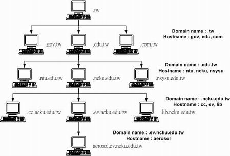
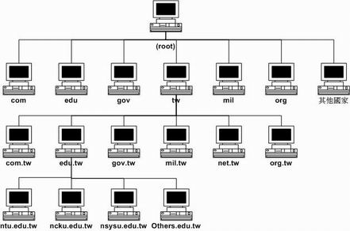
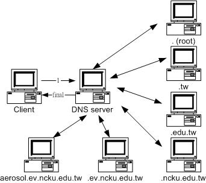
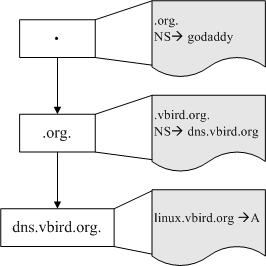
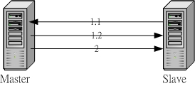
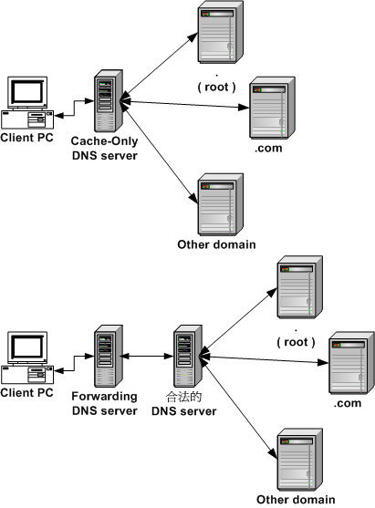
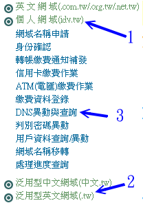
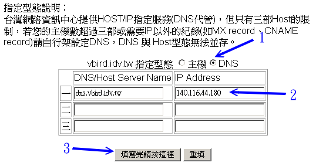

| |
最近更新日期：2007/06/25
本文已不再维护，更新文章请参考这里
我们知道计算机网络系统只认识所谓的 IP ，但是，您可能记得住网络上面所有主机的 IP 吗？
就鸟哥来说，连自己的主机的 IP 都记不起来了，怎么可能连其他的主机 IP 都记的住！
因为，人脑对于数字组成的 IP 的记忆实在是......不怎么样。
但是，相对来说，人们对于由文字所组成的主机名那可以容易记忆的多了～
所以，才会发展出可以经由主机名( hostname )对应到计算机
IP 的一个模式，这样我们就可以轻轻松松的记住主机名即可，计算机 IP 那就交给
Domain Name System ( DNS )去搞定吧！
那个 DNS 系统是由柏克莱大学发展的 bind 这个套件( Berkeley
Internet Name Domain )所提供的啦！基本上，DNS 最主要的工作就是将 Hostname
对应到 IP 这个功能了，不过，要架设一个成功的 DNS 主机的话，还得要对于 DNS
的运作很清楚才行啊！否则架设的不对，还反而会造成大家的问题喔！这个章节当中，
要学会的数据其实还蛮多的，需要了解：什么是正解、什么是反解、什么是 Zone、客户端
( Client ) 是经由什么咚咚来查询得到 IP 的呢？！以及 DNS 的授权问题等等。
哇！赶快清一清脑门，要好好的用功啰！ ^_^
|
 本章的行前准备工作 本章的行前准备工作
人类的脑袋对于数字毕竟不比文字来的敏感，偏偏计算机的世界仅认识 0/1 而已。
为了将两者兜在一起于是有了主机名与 IP 的对应啊～而这个对应的协定就是 DNS 了。
学习 DNS 你必需要对网络有一定的概念，尤其是主机名的说明喔！
什么是 DNS
目前的 Internet 世界最常用的还是所谓的 TCP/IP 协议，其中 IP 协定为第四版的 IPv4 。
不过，这个 IPv4 是由 32 个位 (32 bits) 所组成，为了人脑已经转成四组十进制的数字了，
例如 123.234.56.78 这样的格式。当我们利用 Internet 传送数据的时候，
就需要这个 IP ，否则数据怎么知道要被送到哪里去？
Tips:
传送数据的方法有很多，不见得全部都是透过 IPv4 这个协议，例如在 LAN 里面常用的 NetBIOS 就是一例。
不过，在这里，我们不讨论其他的传输方法，专门探讨 IPv4 这个协议喔！
|  |
然而人脑对于 IP 这种数字的玩意儿，记忆力实在是不怎么样。但是如上所说，
当我们需要数据传输时，又很需要对方的 IP ，怎么办？为了应付这个问题，
早期的朋友想到一个方法，那就是 利用某些特定的档案将主机名与 IP 作一个对应，
让主机名与 IP 有关连性，如此一来，我们就可以透过主机名来取得该主机的 IP 了！
真是个好主意，因为人类对于名字的记忆力可就好多了！ ^_^y。
可惜的是，该方法还是有缺憾的，那就是 主机名与 IP 的对应无法自动于所有的计算机内更新，
且要加入该对应仅能向 INTERNIC 注册，若 IP 数量太多时，该档案会大到不象话，也就不利于主机同步化了。
而为了填补这个缺憾，柏克莱大学发展出另外一套阶层式管理主机名对应 IP 的系统，
我们称他为 Berkeley Internet Name Domain, BIND ，这个系统可就优秀的多了～
透过阶层式管理，可以轻松的进行维护的工作～太棒了！
这也是目前全世界使用最广泛的领域名系统(Domain Name System, DNS)哩～
透过 DNS ，我们不需要知道主机的 IP ，只要知道该主机的名称，就能够轻易的连上该主机了！
Tips:
在底下的说明当中，我们有时会提到 DNS 有时会提到 BIND ，这有什么不同？
由上面的说明里面，您可以了解到， DNS 是一种因特网的通讯协议名称，
至于 Bind 则是提供这个 DNS 服务的套件～这样您了解了吗？！
| |
那么要立刻来架设 DNS 主机吗？当然不是～如同上面说的， 因特网上面，
数据的传输最重要的就是得要知道对方的 IP，如此才能达成联机。因此，
架设 DNS 就必须要了解整体因特网的领域名架构，否则，一旦 DNS 架设错误，
可能会造成您所管辖的主机无法正确的在 Internet 上头传输数据的问题！
所以，要设定 DNS 之前，您必须要就领域名系统里面惯用的 FQDN、Hostname 与 IP 的查询流程，
正解与反解、合法授权的 DNS 主机之意义，以及 Zone 等等的知识作一个认识才行！
这可是很重要的，不要轻忽他了！
Tips:
事实上，由于 IPv4 的 IP 数量已经不足了，为了应付未来的网络架构而开发了 IPv6 出来。
但是 IPv6 的『数字数量』是比 IPv4 要多出好多好多的！可想象的到的是，那时 DNS 可就更重要了！@_@
| |
什么是 Domain Name System：
DNS 的全名是『 Domain name system 』，
中文译名为『 领域名系统』，
这个咚咚的用途是什么哇！为什么我们的计算机或者是
Internet 一定需要他 (尤其是以 WWW 的方式来上网时) ？呵呵！
他最大的用途就是『 造福懒惰与记忆性薄弱的人类～』
哈哈！没错！为什么说他是造福人类呢？且听鸟哥娓娓道来：
/etc/hosts 的历史：
如同前面以及 网络基础章节当中谈到的，IPv4 的 IP
是由 32bits 所组成，转成十进制的话则是四组 0-255 的数字所组成的。
由于不容易记忆，因此就有了主机名与 IP 对应的想法出来。也就是说，
只要输入一个『计算机的名字』而我们的系统就会自动的将这个名字转成计算机了解的
IP ！嘿嘿！如此一来，我要记得『名字』总是比 IP 容易的多了！
依据这个想法而有了 /etc/hosts 这个档案！例如，只要您输入
『 ping -c 5 localhost 』
您的 Linux 马上可以印出 127.0.0.1 这个 IP
， Why ？您去看一下 /etc/hosts
就知道为什么了！所以啰，只要将您常常上网的『网址对应的 IP 』写到这个 /etc/hosts
底下，您的 IP 搜寻速度就会快上很多～
Tips:
再次强调，在您的私有网域内部，最好将所有的 IP 都写入这个档案中啦！
| |
早期(大约20~30年前)的计算机可是贵重物资，一般人是可望而不可及的，因为计算机数量太少，
所以使用 /etc/hosts 来记忆这些 IP 与名称的对应还尚可应付。但是在现代，
Internet 上面这么多主机，并且常常会突然的『噗通』又多出一部主机来服务，
那么我们总不能一个一个的将他输入在 /etc/hosts 里面吧？对呀！真不聪明！
而且也无法立刻让全世界的计算机都同步更新他们自己的 /etc/hosts 档案啊！
所以后来的这个时候就有所谓的『 领域名解析系统,
DNS』出现啦！
DNS 服务利用类似树状目录的型态，将主机名的管理分配在不同层级的
DNS 服务器当中，经由分层管理，所以每一部主机记忆的信息就不会很多，
而且若有 IP 异动时也相当容易修改！那么这个
DNS 的功能您知道了吗？对啦！就是『 将计算机主机的名称转译成
IP 』就是了！当然啰，他的额外功能还很多！总之，他的最大功能就是『
让有意义的，人类较容易记忆的主机名(英文字母)，转译成为计算机所熟悉的
IP 地址！ 』
举个例子来说好了，奇摩雅虎的网站的 IP 是 202.43.195.52
，所以您可以在您的浏览器上面输入『 http://202.43.195.52 』来连上奇摩雅虎！
不过，我想没有几个人能够将这个
IP 背的起来的吧？反之，我们却都知道奇摩雅虎的网址为 tw.yahoo.com ，那么您只要输入『
http://tw.yahoo.com 』就可以连上该主机啦！很容易记忆吧！
/etc/hosts
：直接在 Client 端的档案内输入主机名对应的 IP 来查询；
DNS 系统
：利用额外的DNS服务，让Client端可以透过名称解析来取得目的地主机的IP
|
在提到名称与 IP 的解析流程之前，我们还必需来讨论一下『 什么是
domain name 与 host name？』也就是领域名与主机名。
在讨论这个主题之前，我们来聊一聊比较生活化的话题：
-
网络世界其实有很多人自称为『鸟哥』的，包括敝人在下小生我啦！那么你怎么知道此鸟哥非彼鸟哥呢？
这个时候你可以利用每个鸟哥的所在地来作为区分啊，比如说台南的鸟哥与台北的鸟哥等。
那万一台南还有两个人自称鸟哥怎么办？没关系，你还可以依照乡镇来区分呢！比如说台南北区的鸟哥及台南中区的鸟哥。
如果将这个咚咚列出来，就有点像这样：
鸟哥、北区、台南
鸟哥、中区、台南
鸟哥、台北
......
|
是否就可以分辨他的不同点了呢？呵呵！没错！就是这样！
- 另外一个例子可以使用电话号码来看，假如高雄有个 1234567 而台南也有个 1234567
，那么(1)您在高雄直接拨接 1234567 时，他会直接挂入高雄的 1234567 电话中，
(2)但如果您要拨到台南去，就得加入(06)这个区码才行！我们就是使用区码来做为辨识之用的！
是否还不清楚鸟哥要说什么？我们常常会发现 主机名都是 www 的网站，例如
www.gov.tw, www.seednet.net, www.hinet.net 等等，那么我们怎么知道这些 www
名称的主机在不同的地方呢？ 就需要给他领域名啰！也就是 gov.tw, seednet.net,
hinet.net 等等的不同，所以即使您的主机名相同，但是只要不是在同一个领域内，
那么就可以被接受啰！
基本上，我们知道 DNS 是有层级之分的，那么每个层级的 Hostname 与 Domain name
可是不一样的咚咚ㄋㄟ～鸟哥使用我们的主机来加以说明，如下图所示：

图一、分层次的 DNS 架构 ( Hostname 与 Domain name )
在上面的例子当中，由上向下数的第二层里面，那个 .tw 是 domain name ，而 com, edu,
gov 则是主机的名称，而在这个主机的名称之管理下，还有其他更小网域的主机，
所以在第三层的时候，基本上，那个
edu.tw 就变成了 domain name 了！而成大与中山的 ncku, nsysu 则成为了 hostname 啰！
呵呵！以此类推，最后得到我们的主机那个 aerosol 是主机名，而 domain
name 是由 ev.ncku.edu.tw 那个名字所决定的！自然，我们的主机就是让管理 ev.ncku.edu.tw
这个 domain name 的 DNS 服务器所管理的啰！这样是否了解了 domain name 与 hostname
的不同了呢？
DNS 的查询过程：
接下来我们要谈一谈，那么 DNS 的 (1)架构是怎样？
(2)查询原理是怎样？总是要先知道架构才能知道如何查询的吶！所以底下我们先来介绍一下整体的架构。
DNS 的架构：

图二、DNS 层阶概念示意图
上面就是一个简单的 DNS 阶层架构啰，在整个 DNS 系统的 最上方一定是
. (小数点) 这个 root 的 DNS 主机，他底下管理的就只有 com, edu, gov, mil,
org 与以国家为分类的第二层的主机名了！这两者称为 Top Level Domains (TLDs) 喔！
- 一般最上层领域名 (Generic TLDs)：例如 .com, .org, .gov 等等；
- 国码最上层领域名 (Country code TLDs)：例如 .tw, .uk, .jp 等
例如台湾地区最上层的领域名是以
.tw 为开头，管理这个领域名的这部机器的 IP 是在台湾，但是他的记录则是记录在
. (root)那部机器里面的！还有其他的国家的最上层如 .cn 指的是大陆，
.de 指的是德国一样！那么每个国家之下记录的主要的下层有哪些领域呢？
呵呵！主要就是有这六大类：
| 名称 | 代表意义 |
| com | 公司、行号、企业 |
| org | 组织、机构 |
| edu | 教育单位 |
| gov | 政府单位 |
| net | 网络、通讯 |
| mil | 军事单位 |
其实最早之前在 . (root)之下只有这六大类的 domain name
，但是网络成长的速度太快了，因此后来又多出这些以国码来分的
domain name ，如此一来，在该国家之内，只要向该国家申请 domain name
即可，不需要再到最上层去申请啰！也因此，在这些国码之下，还是有这六大类的
domain name 为主的哩！当然啦，在目前，由于因特网持续的发烧，说实在的
domain name 实在是有点不太够用，所以又有相当多的领域名被设计出来，例如目前台湾
ISP 提供的 .idv.tw 的个人网站啦！
好了，再强调一次， DNS 系统是以所谓的阶层式的管理，所以，请注意喔！那个
.tw 只记录底下那一层的这数个主要的 domain 的主机而已！至于例如 edu.tw 底下还有个
ncku.edu.tw 这部机器，那就直接授权交给 edu.tw 那部机器去管理了！也就是说『
每个上一层的
DNS 主机，所记录的信息，其实只有其下一层的主机名而已！
』至于再下一层，则直接『授权』给下层的某部主机来管理啰！呵呵！所以您就应该会知道
DNS 到底是如何管理的吧！ ^_^
会这样设定的原因不是没有道理的！
这样设计的好处就是：每部机器管理的只有下一层的
hostname 对应 IP 而已，所以减少了管理上的困扰！而下层 Client 端如果有问题，只要询问上一层的
DNS server 即可！不需要跨越上层，除错上面也会比较简单呢！
DNS 的搜寻流程：
刚刚说过 DNS 是以类似『 树状目录』
的型态来进行名称的管理的！所以每一部
DNS 主机都『 仅管理下一层 DNS 主机的名称转译』而已，
至于下层的下层，则『授权』给下层的
DNS 主机来管理啦！这样说好像很绕口，好吧！我们就以下图来说一说原理啰：

图三、DNS 主机查询流程示意图
首先，当您在浏览器的网址列输入 http://aerosol.ev.ncku.edu.tw 时，您的计算机就会依据相关设定(
在 Linux 底下就是利用 /etc/resolv.conf 这个档案 )
所提供的 DNS 的 IP 去进行联机查询，好了，由于目前最常见的 DNS 主机就属
Hinet 的 168.95.1.1 这个 DNS 了，所以我们就拿他来做例子吧！嗯！这个时候，
hinet 的这部主机会这样工作：
- 先查看本身有没有纪录：
刚刚说过啦，由于 DNS
是层阶式的架构，任何一部 DNS 都仅记录下一层里面的主机名对应的 IP 而已，由于
hinet 并非学术网络里面的主机，所以自然也就没有办法直接提供给 client 端关于
aerosol.ev.ncku.edu.tw 这部机器的 IP 了，所以啦，一般而言，这个时候 168.95.1.1
就会向最顶层，也就是 . (root) 的主机查询 .tw 这部机器的地址；
- 向最顶层 ( root )查询：
由于 168.95.1.1 没有纪录我们主机的
IP ，这个时候他就会向『最顶层』的 . (root) 这部主机来查询 . (root) 的下一层，也就是
.tw 这部机器的数据了！这个时候， . (root) 就会告诉 168.95.1.1 说『嘿！您要查
.tw 这个网域的管理者呀？我这里有 .tw 这个网域的管理的主机之
IP 信息，您可以直接去找他！』；
- 向第二层查询：
168.95.1.1 接着又到 .tw 去查询，而该部机器管理的又仅有
.edu.tw, .com.tw, gov.tw... 那几部主机，经过比对后发现我们要的是 .edu.tw
的网域，所以这个时候 .tw 又告诉 168.95.1.1 说：『您要去管理
.edu.tw 这个网域的主机那里查询，我有他的 IP ！』；
- 向下层持续查询：
好了，一步一步下来， .edu.tw
可以查到管理 .ncku.edu.tw 的主机 IP ； .ncku.edu.tw 可以查到管理 .ev.ncku.edu.tw
的主机 IP ，而最后我们 aerosol.ev.ncku.edu.tw 就可在管理 .ev.ncku.edu.tw
网域的那部主机的设定纪录当中查询到啦！
- 记录暂存内存：
查到了 IP 之后，这部 168.95.1.1
的 DNS 机器总不会在下次有人查询 aerosol.ev.ncku.edu.tw
的时候再跑一次这样的流程吧！粉远粉累的吶！而且也很耗系统的资源与网络的带宽，所以呢，
168.95.1.1 这个 DNS 很聪明的会先记录一份 aerosol.ev.ncku.edu.tw 对应 IP
的信息在自己的暂存内存当中，以方便下一次又有人对同一个主机名的要求之查询！最后则将结果回报给
client 端！当然啦，那个记忆在 cache 当中的数据，其实是有时间性的，当过了
DNS 设定记忆的时间(通常可能是 24 小时)，那么该记录就会被释放喔！
由这样的分层负责您发现了什么？嗯！那就是：
- 当一个『合法』的 DNS 主机里面的设定修改了之后，来自世界各地任何一个 DNS
的要求，都会正确无误的显示正确的主机名对应 IP
的信息，因为他们会一层一层的寻找下来，所以，要找您的主机名对应的
IP 就一定得要透过您的上层 DNS 主机的纪录才行！所以只要您的主机名字是经过上层『合法的
DNS』主机的设定的，那么就可以在 Internet 上面被查询到啦！呵呵！很简单维护吧，机动性也很高。
- 在主机的暂存内存记录当中，由于是有时间性的，所以当您的主机名在 DNS
当中被修改了之后，但是由于之前的旧信息还记忆在其他的 DNS
主机的暂存内存里面，所以啦，可能在别人以非您的
DNS 主机来查询您的主机名时，就会得到先前的旧信息，这个时间差不多可能是
10 分钟到 2 天左右，这也是为什么我们常说当您修改了一个 domain name 之后，可能要
2 ~ 3 天后才能全面的启用的缘故啦！
- 每一部可以记录主机名与 IP 对应的 DNS 服务器都可以随意更动他自己的数据库对应，
因此主机名与域名在各个主机底下都不相同。举例来说， idv.tw 是仅有台湾才有这个 idv 的网域～
因为这个 idv 是由 .tw 所管理的，所以只要台湾 .tw 维护小组同意，就能够建立该网域喔！
好啦！既然 DNS 这么棒，然后我们又需要架站，所以需要一个主机的名称，因此，
那么我们需要架设 DNS 了吗？当然不是，为什么呢？
刚刚鸟哥提到了很多次的『合法』的字眼，因为他就牵涉到『授权』的问题了！
我们在前面的『 申请合法的主机名』当中也提到，
只要主机名合法即可，不见得需要架设 DNS 的啦！
好了，既然 DNS 系统使用的是网络的查询，那么自然需要有开 Listen 的 port
啰 ( 监听的埠号 )！没错！很合理！那么 DNS 使用的是那一个 port 呢？那就是
53 这个 port 啦！您可以到您的 Linux 底下的 /etc/services
这个档案看看！搜寻一下 domain 这个关键词，就可以查到 53 这个 port 啦！
但是这里需要跟大家报告的是，通常，
DNS 查询的时候，是以 udp 这个较快速的数据传输协议 (protocol)
来查询的，但是万一没有办法查询到完整的信息时，就会再次的以
TCP 这个协定来重新查询的！所以启动 DNS 的 daemon (就是 named 啦) 时，会同时启动
TCP 及 udp 的 53 这个 port number 喔！
关于『授权』的意义：
很多朋友都认为『
架设 DNS 可以设定主机的名称，而我要架站需要主机有名字，因此一定需要架设
DNS ，只要有 DNS，我的主机就可以有名字了！
』是这样吗？当然不是！这是错误的观念！怎么说呢？
从 上面图三的图示当中，您应该不难发现，当我要搜寻
aerosol.ev.ncku.edu.tw 主机时，就需要向管理 .ev.ncku.edu.tw 这个网域的那部机器查询才行，而要查询
.ev.ncku.edu.tw 则需要在 .ncku.edu.tw 上面询问才可以！这是因为『 上层
DNS 主机 .ncku.edu.tw 已经将 .ev.ncku.edu.tw 这个网域的管理权 "授权" 给
green.ev.ncku.edu.tw 这部机器，当有人要查询 .ev.ncku.edu.tw 这个网域的主机
IP 时， .ncku.edu.tw 将会把查询的任务直接转给 green.ev.ncku.edu.tw 去管理了！从此，
.ncku.edu.tw 这个网域的管理主机，将不会再接管 ev.ncku.edu.tw 这个网域的名称管理！
』是否很像人类社会的『授权』的概念？
也就是说，当您老板充分的『授权』给您某项工作的时候，从此，
要进行该项工作的任何人，从老板那边知道您才是真正『有权』的人之后，都必须要向您请示一样！
^_^！所以啰，如果您要架设 DNS ，而且是可以连上 Internet 上面的 DNS
时，您就必须要透过『 上层
DNS 主机的授权』才行！这是很重要的观念喔！等一下我们在底下会介绍一个如何架设一个
『经过合法授权的 DNS 主机』哩！
其实，如果将上面的话改换成：『
我要架站，所以我要让我的主机有一个合法的名字！
』那样就合理了！怎么说呢？因为我可以请上层
DNS 帮我设定主机名对应 IP 就可以啦！如此一来，要找我的 hostname 对应
IP 的人，都可以直接在我的上层 DNS 里面找到，根本不需要透过我的 Linux 主机吶！例如鸟哥研究室的
aerosol.ev.ncku.edu.tw 就可以在 green.ev.ncku.edu.tw 这部管理 DNS 的 server
上面找到ㄋㄟ～不必亲自来我的 aerosol.ev.ncku.edu.tw 上面找！
也就是说，藉由
DNS 系统最大的功能『 主机名转译成 IP 』
这个动作，那么您只要向任何一个合法的
DNS 主机申请一个『 主机名, hostname 』给您的
Linux 主机，让大家都可以藉由该 DNS 主机来查询到您的 Linux 之
IP ，就可以使用该主机名来架站啦！就是这么简单！
好了，那么您就应该知道了，要让您的主机名对应 IP 且让 Internet 上面的计算机都可以查询的到，就需要：
- 上层 DNS 的授权让您设定 DNS 主机，或者是；
- 直接请上层 DNS 主机来帮您设定！
这两种模式。举例来说，鸟哥的 Linux 教学网站主机名为
linux.vbird.org ，鸟哥是向上层 .org 的 ISP 注册了 vbird.org
的领域名，但鸟哥申请的是自己管理 DNS 服务器，所以我网站的数据库放在哪里呢？

图四、授权与数据库的差异
看到了吗？vbird.org 是向上层 ISP 注册的，而 ISP 则是提供授权给鸟哥 (NS 的标志)，
至于鸟哥的 linux.vbird.org 则是直接记录在鸟哥的 DNS 服务器上面。所以，万一鸟哥的 DNS 服务器挂点，
那么虽然 ISP 有纪录 dns.vbird.org 这一部主机的 IP ，但是大家都无法查到 dns.vbird.org 的 IP 喔！
为什么呢？瞧一瞧 图三啊！因为授权的关系嘛！对于 NS 及 A 标志不熟没关系，
后面就会立刻讲到这个咚咚啰！
那么哪种模式比较好呢？这没有一定的答案，
底下我们来谈一谈，您比较适合哪一种模式的设定呢？
网站代管还是自己设定 DNS：
如果您曾经申请过 domain name 的话，例如向 Hinet 或 Seednet 等台湾各大主要
ISP 申请 domain name 的话，应该都会知道有两种主要的模式，就是刚刚上头提到的
DNS 授权，或者是直接交给 ISP 来管理。交给 ISP 管理的，
就可以称作是域名代管啦！当然啦，如果您是学校单位的话，或者是企业内部的小单位，那么就得请您向上层
DNS 主机的负责人要求啰！无论如何，您只能有两个选择就是了，要不就是请他帮忙您设定好
hostname 对应 IP ，要嘛就是请他直接将某个 domain name 段授权给您做为 DNS
的主要管理网域。
那么我怎么知道那个方式对我比较好呢？请注意，由于 DNS 架设之后，会多出一个监听的
port ，所以理论上，是比较不安全的！因此，能不设当然就不要设定比较好啰！所以，这里的建议如下：
需要架设 DNS 的时机：
- 您所负责需要连上 Internet 的主机数量庞大：例如您一个人负责整个公司十几部的网络
Server ，而这些 Server 都是挂载您的公司网域之下的。这个时候想要不架设 DNS
也粉难啦！
- 您可能需要时常修改您 Server 的名字，或者是您的
Server 有随时增加的可能性与变动性；
不需要架设 DNS 的时机：
- 网络主机数量很少：例如家里或公司只有需要一部 mail server 时；
- 您可以直接请上层 DNS 主机管理员帮您设定好 Hostname 的对应时；
- 您对于 DNS 的认知不足时，如果架设反而容易造成网络不通的情况；
- 架设 DNS 的费用很高时！
正解与反解的 Zone 意义：
讲了这许多，还得再提一提关于正解、反解与 Zone 的问题才行啊！
什么是正解与反解？
我们在前头的开宗明义当中就提到啦， DNS 系统本来最主要的功能就是在转译
hostname 与 IP 啰，由于计算机在网络上面其实认识的只是 IP
啦，所以，一般来说，我们称『 由
hostname 去寻找出 IP 的程序称为『 正解 』』，
至于由 IP 去查询得到 hostname 那就被称为反解了！正反解的设定情况是差异性很大的！怎么说呢？
- 正解：
在正解的情况之下，我们可以透过主机分层设定的方式来查询 (例如前面的图三)，而因为是
Hostname 对应 IP ，所以即使在不同网段的 IP ，仍然可以写在同一个 domain
之中！例如鸟哥的主机是在学校里面 (140.116.xxx.xxx)，但是鸟哥申请的是 vbird.idv.tw
这个 domain 的名称，而很多朋友则是以 ISP 提供的 IP (例如 61.xxx.xxx.xxx)
来进行 *.idv.tw 的申请的！呵呵！那么一来，我的 vbird.idv.tw 就与大家的
*.idv.tw 在同一个 domain 的设定当中啰，但是这些主机却是在不同的网域之中喔 (140.116.xxx.xxx
不会跟 61.xxx.xxx.xxx 在同一个网段中吧！ ^_^) ！所以啰，任何一部 DNS 都可以将您的
IP 写入他们的正解当中啰！
- 反解：
但是反之则不行！怎么说呢？因为当初 IP
规划分配的时候，就必需要一个区域一个区域的划分的，所以当然不可能同一个网段的
IP 在不同的地方出现吧！因为这涉及到 TCP/IP 的协议与 router 的架构ㄋㄟ～因此，同一个
IP 网段的反解就真的得要透过上层 IP 网域的 DNS 服务器设定才行了！所以由 IP 反查 hostname
的话，大部分的情况下就需要向直属的上层 IP 网域申请了！
举个例子来说：我想要自己的领域名的名字，所以我可以去外面的 ISP 申请注册一个合法的名字来架设我的
DNS ！从此之后，别人就可以经过我的 DNS 正解查询得到我的主机 IP。但是如果要由
IP 反查回 hostname 的话，我就『 一定必需要』请管理我主机所在网域的上层的
DNS 管理员来设定才行ㄋㄟ！这也是目前比较麻烦的地方，因为正解您可以自行设定，
但是反解则必需要请上层的管理员设定！如果是向
ISP 申请的 IP ，那就得向 ISP 申请反解名称改换，这个部分通常很麻烦～
知道正反解之后，再来要来知道一下，什么又是 Zone (区域)
呢？说的简单一点的话， 一个正解或反解的设定就是一个
zone ，例如我要规范 vbird.idv.tw 这个 domain 的设定内容，那么他就是一个
zone ！通常，『 一个配置文件就是一个 zone 』！
如果以鸟哥的 vbird.idv.tw 这个例子来说，配合上面的 图三 来说明，
那鸟哥的 vbird.idv.tw 那部主机里面至少需要知道 . (root) 以及鸟哥自身的设定，
所以，这个 domain 的 DNS 配置文件里面，必需要有：
- hint( root ) 的设定；
- vbird.idv.tw 这个 domain 的正解设定；
- localhost 的正解设定(非必要)；
- localhost 的反解设定(非必要)。
那么我就有四个 zone 了！如果以我们系馆的 DNS 主机 green.ev.ncku.edu.tw
来说的话，他至少要有：
- hint(root)；
- ev.ncku.edu.tw 正解；
- ev.ncku.edu.tw 反解以及 ；
- localhost 正解；
- localhost 反解。
等五个 zone 的定义啰！嘿！您会发现，我没有 vbird.idv.tw 这个 domain
的反解设定～为什么呢？请参考上面的说明吧！因为反解需要要求 IP
协议的上层来设定才行！并且，需要特别留意的是，『 每一个
zone 都有一个配置文件，而规定这些配置文件档名的，就交给
/etc/named.conf 这个参数档来设定！』
Tips:
在新版的 Linux distribution 当中，为了安全性的考虑，
所以将这个档案放置在 /var/named/chroot 当中喔！需要特别注意！
| |
也就是说，
DNS server 使用的 bind 这个套件中，他的主要参数档是 /etc/named.conf ，而这个档案当中就是记录了每一个
zone 的配置文件档名！实际上，主机名与 IP 的对应就是记录在各个 zone 的配置文件内～
好了，正反解需不需要成套产生，在这里不用多说明了吧？
^_^！请注意喔，在很多的情况下，尤其是目前好多莫名其妙的领域名产生出来，
所以，常常会只有正解的设定需求而已。不过也不需要太过担心啦，
因为通常在反查的情况中，如果您是使用目前台湾地区最流行的
ADSL 上网的话，那么 ISP 早就已经帮您设定好反解了！例如：211.74.253.91这个
seednet 的浮动式 IP 反查的结果会得到 91.253.74.211.in-addr.arpa
这样的主机名！所以在一般我们自行申请领域名的时候，您只要担心正解的设定即可！
不然的话，反正反解的授权根本也不会开放给您，您自己设定得很高兴也没有用呀！ ^_^
Tips:
事实上，需要正反解成对的大概仅有 mail server 才需要吧！由于目前网络带宽老是被垃圾、广告邮件占光，
所以 Internet 的社会对于合法的 mail server 规定也就越来越严格。如果您想要架设 mail server 时，
最好具有固定 IP ，这样才能向你的 ISP 要求设定反解喔！以 hinet 为例的反解申请：
http://hidomain.hinet.net/top1.html
| |
DNS 服务器的套件、种类与 cache
only 主机设定：
谈完了一些基础概念后，接下来让我们来聊一聊，那如何设定好 DNS 服务器啊？
这当然就得由套件安装谈起啦！赶紧来玩一玩吧！
架设 DNS 所需要的套件：
终于废话都说完了！相信您大概也有点累的吧？鸟哥是蛮累的啦，因为手臂、
肩颈酸痛的毛病颇严重....咦！讲这个干嘛？
@_@ 好啦，我们终于要来安装 DNS 所需要的套件了！还记得前面提过的，我们要使用的
DNS 就是使用柏克莱大学发展出来的 BIND (Berkeley Internet Name Domain,
BIND) 这个套件啦！那么怎么知道您安装了没？还记得 基础篇
里面的 RPM 吗？对啦！就是使用
RPM 来检验啰：
[root@linux ~]# rpm -qa | grep bind
bind-utils-9.2.4-16.EL4 <==这个是客户端搜寻主机名的相关指令
bind-9.2.4-16.EL4 <==这个才是 DNS 服务器主程序
bind-chroot-9.2.4-16.EL4 <==将 bind 主程序关在家里面！ ^_^
|
万一没装怎么办？嗄！还问我ㄌㄟ～赶快将您的原版光盘拿出来，然后将他安装上去先～不会安装？
请自行拿出『 鸟哥的 Linux 私房菜 -- 基础学习篇』去观察一下
RPM 的用法吧！
当然啦，更好的作法就是利用 yum install bind 即可啊！
此外，那个 bind-chroot 是干嘛用的？所谓的 chroot 代表的是『 change to root 』的意思，
那个 root 代表的是根目录。早期的 bind 默认将程序启动在 /var/named 当中，但是该程序可以在根目录到处转移，
因此若 bind 的程序有问题时，则该程序会造成整个系统的危害。为避免这个问题，
所以我们将 某个目录指定为 bind 程序的根目录，由于是根目录，
所以 bind 便不能离开该目录！所以如果该程序被攻击，了不起也是在某个特定目录底下搞破坏而已。
CentOS 默认将 bind 锁在 /var/named/chroot 目录中喔！ ^_^
BIND 的默认路径设定与 chroot
好了，现在我们知道 BIND 这个 DNS 服务器的设定需要有
- 本身的配置文件：主要规范主机的设定、zone file 的所在、权限的设定等；
- 数据库档案：记录主机名与 IP 对应的等。
其中 BIND 的配置文件为 /etc/named.conf ，而在这个档案里面可以规范 zone file 的完整檔名喔！
也就是说，你的 zone file 其实是由 /etc/named.conf 所指定的，所以 zone file 档名可以随便取啦！
只要 /etc/named.conf 内规范为正确即可。一般来说， CentOS 的默认目录是这样的：
- /etc/named.conf ：这就是我们的配置文件啦！
- /etc/sysconfig/named ：是否启动 chroot 及额外的参数，就由这个档案控制；
- /var/named/ ：数据库档案默认放置在这个目录
- /var/run/named ：named 这支程序执行时默认放置 pid-file 在此目录内。
不过，为了系统的安全性考虑，一般来说目前各主要 distributions 都已经自动的将你的 bind 相关程序给他 chroot 了！
那你如何知道你 chroot 所指定的目录在哪里呢？就是上面提到的那个 /etc/sysconfig/named 啦！
你可以先查阅一下：
[root@linux ~]# vi /etc/sysconfig/named
ROOTDIR=/var/named/chroot
|
事实上里面有意义的就只有上面这一行，意思是说：『我要将 named 给他 chroot ，并且变更的根目录为
/var/named/chroot 』喔！由于根目录已经被变更到 /var/named/chroot 了，但 bind 的相关程序是需要
/etc, /var/named, /var/run .... 等目录的，所以实际上咱们 bind 的相关程序所需要的所有数据会是在：
- /var/named/chroot/etc/named.conf
- /var/named/chroot/var/named/zone_file1
- /var/named/chroot/var/named/zone_file.....
- /var/named/chroot/var/run/named/...
哇！真是好麻烦～不过，不要太担心！因为新版本的 distributions 通常帮您作好一些连结对应了！
举例来说，你依旧可以使用 /etc/named.conf 来设定你的 DNS ，为什么呢？因为 CentOS 主动的帮你将
/var/named/chroot/etc/named.conf 连结到 /etc/named.conf 啰！
另外，绝大部分默认的 zone file 数据库档案也都主动的帮你做好连结了！请自行进入 /var/named
去 ls 一下吧！ ^_^
Tips:
事实上， /etc/sysconfig/named 是由 /etc/init.d/named 启动时所读入的，
所以你也可以直接修改 /etc/init.d/named 这个 script 哩！
| |
另外你需要注意到的是 /var/run/named/ 这个目录是要让 bind 的程序 (named) 写入用的，
所以他的权限必需要让 named 这个使用者可以写入才行！这个可重要的很！
BIND 的升级：
必须请大家注意的是，这个 DNS 的 53 port 其实也不是个很安全的咚咚，所以呢，非必要，其实是不太建议启用
DNS 的啦！不过，如果真的要安装的话，那么请随时注意您的 Linux distribution
是否有定时的公告的漏洞修补套件呢？这个真的很重要，因为鸟哥很久很久以前，就是被这个
port 53 给种植了一个蠕虫，真是讨厌的很！ @_@
另外，旧版的使用者使用新的 9.x 版以后的 BIND 时，由于主动帮你设定好 chroot ，
你可能一开始会不太适应，不过，不建议你拿掉 chroot 的功能！毕竟 DNS 的 port 53 是需要 root 身份启动的，
具有一定的危险性，所以，给他 chroot 毕竟是比较妥当啦！您说是吧！
DNS 的 master/slave 架构
在 DNS 的设定上面，基本上，您必须要已经很清楚
zone 是什么了，否则很难继续设定喔！会搞的一塌糊涂的～无论如何，您一定要知道的是，
bind 的配置文件，就是 /etc/named.conf。
不过，由于 chroot 的关系，这个档案也可能会在 /var/named/chroot/etc/ 当中，
另外，针对 DNS server 的类型大致上可以分为三类，分别是：
Master：
这种类型的 DNS 本身含有领域名的配置文件 (就是有 Zone 啦！)，
这个配置文件就是设定正解或者是反解的『Database』啰！所以他本身是具有提供
Internet 查询所需的数据喔！例如我可以在我的主机上面设定提供 vbird.idv.tw
这个网域，那么我的主机就是 master 类型的主机啦！
Slave：
假设你的 DNS 服务器总共管理 50 部主机的 IP 与主机名的对应好了，
同时假设你只有一部 DNS 服务器时，那么万一由于网络问题或者是主机的软、硬件问题，导致这个服务终止了，
想一想，你那 50 部主机的 hostname 与 IP 的对应还能不能找的到？是吧！
所以，一般来说，
DNS 系统通常会建议您至少要有两部主机提供 DNS 的服务～
不过，如果您有四部 DNS 主机提供这样的名称解析服务，
而且这四部是互相为备援的，也就是说，这四部主机的内容其实是一模一样的，
那么如果您要更动一个 IP 与名称的对应时，就必须要手动去修订四部主机的内容，
这样会不会很麻烦啊？！
这个时候就有 slave 类型的 DNS 主机出现了！不过，slave主机必须要与 master 主机相互搭配喔！
以上面的案例来说明，如果我必须要有四部主机提供 DNS 服务，且四部内容相同，
那么我只要指定一部主机为 Master ，其他三部为该 Master 的 Slave 主机，
那么当要修改一部名称对应时，我只要手动更改 master 那部机器的配置文件，然后，
重新启动 BIND 这个服务后，呵呵！其他三部 slave 就会自动的被通知更新了！
这样一来，在维护上面可就轻松写意的多了～
Tips:
如果您设定 Master/Slave 架构时，您的 Master 主机必须要限制
只有某些特定 IP 的主机能够取得您 Master 主机的正反解数据库权限才好！
所以，上面才会提到 Master/Slave 必须要互相搭配才行！
| |
另外，既然我的所有 DNS 服务器是需要同时提供 internet 上面的领域名解析的服务，
所以 不论是 Master 还是 Slave 主机，他都必须要可以同时提供 DNS 的服务才好！
因为在 DNS 系统当中，领域名的查询是『先抢先赢』的状态，
我们不会晓得哪一部主机的数据会先被查询到的！
为了提供良好的 DNS 服务，每部 DNS 主机都要能正常工作才好啊！
而且， 每一部 DNS 服务器的数据库内容需要完全一致，否则就会造成客户端找到的
IP 是错误的！
这种类型的 DNS 主机没有自己的数据库，单纯仅帮助 Client 端向外部的 DNS
主机要求数据而已～简单的来说，他可以想成是一个『代理人』的角色而已～
通常设定在防火墙上面的呢！
那么 Master/Slave 的数据更新到底是如何动作的呢？请注意，Slave
是需要更新来自 Master 的 DNS 数据啊！所以当然 Slave 在设定之初就需要存在
Master 才行喔！好了， Master 与 Slave 的数据同步动作可以由底下的图示来看：

图五、Master/Slave 的 DNS 主机数据同步过程
整个更新的过程是这样的：
- Slave 判断是否需要更新(1.1)：
我们可以在 Slave 设定好向 Master DNS 主机要求数据更新的周期时间，则每当到达更新时间时，
Slave 会向 Master 索取是否需要更新数据，这个更新数据的判断则以
Serial number 是否不同来进行更新喔！
- Master 判断是否需要更新(1.2)：
除了由 Slave 向 Master 的查询之外，Master 如果 DNS 数据经过变更，且想要 Slave
同步更新时，也可以主动的向 Slave 进行更新通知！
- 数据同步化(2)：
最后当然就是数据由 Master 传送到 Slave 来更新 Slave 的 DNS 数据啰！
如果您想要架设 Master/Slave 的 DNS 架构时，两部主机
(Master/Slave) 都需要您能够掌控才行！网络上很多的文件在这个地方都有点『闪失』，
请特别的留意啊！
底下我们就先来讲一个不需要数据库档案的 cache only 的 DNS 服务器吧！
单纯的 cache-only 与 forwarding DNS 主机设定
什么是 cache-only 与 forwarding DNS 的主机呢？
在介绍怎么设定每一个正反解的 zone 之前，我们先来玩一个简单的 DNS 主机！就是
cache-only (仅快取) DNS server！顾名思义，这个 DNS server 只有
cache (快取) 的功能，也就是说，他本身并没有主机名与 IP 正反解的配置文件，
完全是由对外的查询来提供他的数据源！
至于 forwarding (转递) 的 DNS server
则是将客户端所需要查询的信息转交给 forwarding DNS server 来代为查询，
等到查询结束后，我们的 DNS server 才将结果快取后回传给客户端。这两者的整个运作流程可以看成是这个样子：

图六、Cache-Only 与 Forwarding DNS 主机的运作流程
观察一下图六上下两个图示，妳可以发现 cache-only 需要知道 . (root) DNS 的地址，
所以 cache-only 必须要指定出 . (root) DNS 的数据库所在档案才行。至于 Forwarding DNS 主机，
他是直接将查询的资料丢给另一部上层 DNS 来查询，本身可以不必知道 . (root) DNS 的地址！
一般来说，如果妳的环境需要架设一个 cache-only 的 DNS server 时，其实可以直接使用 forwarding 的机制，
选择的那部 DNS 主机流量要能够负荷较大流量为佳！
要注意的是，不论是 cache-only 还是 forwarding DNS 主机，他们本身都没有管理 zone (那个 root DNS 例外) 的配置文件，
所以说，基本上这两个 DNS 主机只是作为一个中间传递数据的角色罢了！那么为什么要架设这样的一个
DNS 主机呢？闲闲没事干？当然不是！这是有原因的啦！底下说给您听啰！
在某些公司行号里头，为了预防员工利用公司的网络资源作自己的事情，所以都会针对
Internet 的联机作比较严格的限制。当然啦，连 port 53 这个 DNS 会用到的 port
也可能会被挡在防火墙之外的～这个时候，
您可以在『防火墙的那部机器上面，加装一个
cache-only 的 DNS 服务！』这是什么意思呢？很简单啊！就是您自己利用自己的
防火墙主机上的 DNS 服务去帮您的 Client 端解译 hostname <--> IP 啰！因为防火墙主机
可以设定放行自己的 DNS 功能，而 Client 端就设定该防火墙 IP 为 DNS 主机的 IP 即可！
哈哈！这样就可以取得主机名与 IP 的转译啦！
那如何在你的 Linux 主机上架设一个 cache-only 的 DNS 主机呢？
其实真的很简单的啦！因为不需要设定正反解的
Zone ，所以只要设定一个档案 (就是 named.conf) 即可！真是快乐得不得了吶！
另外，Cache-only 只要加上个 Forwarders 的设定即可指定 Forwarding 的数据，
所以底下我们将设定具有 Forwarding 的 cache-only DNS 服务器吧！
- 编辑主要配置文件 /etc/named.conf
在这个档案中，主要是定义跟主机有关的事项，以及各个 Zone 的代表含意与档案，在鸟哥的这个案例当中，
因为使用了 forward 的机制，所以鸟哥的这个 cache-only DNS 服务器并没有 Zone
，所以我们只要设定好跟主机有关的设定即可。设定这个档案的时候请注意：
- 批注数据是以两条斜线『 // 』来作设定的！
- 每个段落之后都需要以『 ; 』来做为结尾！
那么您可以这样设定这个档案啦！
[root@linux ~]# vi /etc/named.conf
// 虽然 CentOS 将这个档案放置到 /var/named/chroot/etc 当中，
// 不过他很好心的帮我们作了个连结，所以你还是可以直接编辑这个档案啦！
options {
directory "/var/named";
dump-file "/var/named/data/cache_dump.db";
statistics-file "/var/named/data/named_stats.txt";
pid-file "/var/run/named/named.pid";
forward only; //只允许 forward!
forwarders {
168.95.1.1; //我这里使用 hinet 的 DNS ！
139.175.10.20; //这个是 seednet 的 DNS ！
};
};
include "/etc/rndc.key";
|
鸟哥在上头的设定当中含有 pid-file 的设定，所以得要特别注意了！因为 pid-file
所在的目录下，也就是那个 /var/run/named 目录，我的 bind
执行文件程序的拥有人 (一般应该是 named 这个使用者) 必须要
能够写入！也就是说， /var/run/named 的 owner 必须
是 named 这个 user 才行喔！但由于我们有使用 chroot ，
因此实际的目录会是 /var/named/chroot/var/run/named 喔！所以你还得要这样确认：
[root@linux ~]# ls -ald /var/named/chroot/var/run/named
drwxrwx--- 2 named named 4096 Oct 12 11:48 /var/named/chroot/var/run/named
|
我们仅动用到 option 这个参数而已，里面的设定值意义为：
- pid-file
指的是每一个 services 记录自己的
PID (Process ID) 的档案啰！这个档案通常用在重新启动或者是 reload 整个
services 最常被使用到的！因为可以使用 kill -1 PID
来重新启动啊！嗄！忘记什么是 PID
？赶快拿出基础篇复习一下！
- forwarders
(不要忘记那个 s 喔！)就是要设定往前寻找的那个『合法』的
DNS 啰！每一个 forward 的主机之 IP 都需要有『 ; 』来做为结尾！
- forward only
这个设定可以让您的 DNS 主机仅进行
forward 而已！是 Cache-Only 主机最常见的设定了！
很简单吧！至于更多的参数我们会在后续篇幅当中慢慢介绍的。
这样就已经设定完成了最简单的 cache-only 的 DNS 主机了！
- 启动 named
启动总不会忘记吧！？赶快去启动一下吧！
[root@linux ~]# /etc/init.d/named start
Starting named: [ OK ]
|
- 观察 port 的变化
请特别的注意喔！并不是启动的时候显示 OK 你的 DNS 就会成功的！所以，还要赶快的来看一下您的
port 53 有没有启动ㄋㄟ～
[root@linux ~]# netstat -utln
Active Internet connections (only servers)
Proto Recv-Q Send-Q Local Address Foreign Address State
tcp 0 0 192.168.1.254:53 0.0.0.0:* LISTEN
tcp 0 0 127.0.0.1:53 0.0.0.0:* LISTEN
udp 0 0 192.168.1.254:53 0.0.0.0:*
udp 0 0 127.0.0.1:53 0.0.0.0:*
|
特别需要留意的是，如果没有指定接口的话，那么所有的网络接口，包含 lo,
eth0, ... 等接口都会被设定为可以接受 domain name 要求的响应接口！此外，
还记得我们在前面提到的，每个接口同时都会提供 TCP 与 UDP 封包的服务喔！
这样看起来似乎真的有启动的样子，不过，我们还是得瞧一瞧设定方面有没有什么大问题呢？
- 检查 /var/log/messages 的内容讯息
named 这个服务的记录文件就直接给他放置在 /var/log/messages 里面啦，所以来看看里面的几行吧！
[root@linux ~]# tail -n 15 /var/log/messages | grep named
Oct 16 15:08 linux named[76]: starting BIND 9.2.4 -u named -t /var/named/chroot
Oct 16 15:08 linux named[76]: using 1 CPU
Oct 16 15:08 linux named[76]: loading configuration from '/etc/named.conf'
Oct 16 15:08 linux named[76]: listening on IPv4 interface lo, 127.0.0.1#53
Oct 16 15:08 linux named[76]: listening on IPv4 interface eth0, 192.168.1.254#53
Oct 16 15:08 linux named[76]: command channel listening on 127.0.0.1#953
Oct 16 15:08 linux named[76]: command channel listening on ::1#953
Oct 16 15:08 linux named[76]: running
Oct 16 15:08 linux named: named startup succeeded
|
Tips:
如果你在 /var/log/messages 里面一直看到这样的错误信息：
couldn't add command channel 127.0.0.1#953: not found
那表示你还必需要加入 rndc key ，请参考本章后面的
利用 RNDC 指令管理 DNS 服务器 的介绍，将他加入你的 named.conf 中！
| |
- 测试：
这部分请参考： Client 端的测试项目
特别说明：Forwarders 的好处与问题分析
关于 forwarder 的好处与坏处，其实有很多种的意见！大致的意见可分为这两派：
- 利用 Forwarder 的功能来增进效能的理论：
这些朋友们认为，当很多的下层 DNS 主机都使用 forwarder 时，
那么那个被设定为 forwarder 的主机，由于会记录很多的信息记录(请参考图三的说明)，
因此，对于那些下层的
DNS 主机而言，会增快很多，亦即会节省很多的查询时间！基本上，这些基本的流程可以看成如下图所示：

图七、Forwarder 参数的运作说明
所有的 cache-only 都设定 forwarder 为『主 DNS 主机』那一部，则由于主
DNS 主机已经记录了较多的信息了(每个人都来要求嘛！)所以，当其他人来要求相同的查询数据时，则主
DNS 那部机器将会直接由其 cache 当中读取，因此，查询效率就变快了！
- 利用 Forwarder 反而会使整体的效能降低：
但是另外一派则持相反的见解！这是因为当主
DNS 本身的『业务量』就很繁忙的时候，那么您的 cache-only
主机还向他要求数据，那么因为他的数据传输量太大，带宽方面可能负荷不量，而太多的下层
DNS 又向他要求数据，所以他的查询速度会变慢！因为查询速度变慢了，而您的
cache-only 主机又是向他提出要求的，所以自然两边的查询速度就会同步下降！
很多种说法啦！鸟哥本人也觉得很有趣哩！只是不知道哪一派较正确就是了
>_<"" ，不过可以知道的是，如果上层的 DNS 速度很快的话，那么他被设定为
forwarder 时，或许真的可以增加不少效能哩！
DNS 主机的详细设定：
好了，经过上面的说明后，我们大概知道 DNS 的几个小细节是这样的：
- 主要配置文件是 /etc/named.conf；
- 每个正解、反解都需要一个档案，而档案的档名是由 /etc/named.conf 所设定；
- 目前的 bind 程序已经进行 chroot 了，可以参考 /etc/sysconfig/named ；
- 当 DNS 查询时，若本身没有数据库，则前往 root (.) 或 forwarders 主机查询；
- DNS 服务器的架设需要上层 DNS 的授权才可以成为合法的 DNS 服务器。
- named 是否启动成功务必要查阅 /var/log/messages 内的信息！
其中第五点很重要，因为我们并没有向上层 ISP 注册合法的领域名，所以我们当然就没有权利架设合法的 DNS 服务器了。
而由于担心我们的 DNS 服务器会与外部因特网环境互相干扰，所以底下鸟哥将主要以一个 vbird.tsai
的领域名来架设 DNS 服务器，如此一来咱们就可以好好的玩一玩自己局域网络内的 DNS 啦！
另外，那个 chroot 是很重要的观念，如果你是跳到这个地方来看或者是以前使用的是旧版的 bind
的话，那么请再次阅读一下前两小节谈到的 bind 的 chroot 部分喔！
底下的文章就不再提及这些基础观念啦！
一个简单的案例说明
假设鸟哥的这部 DNS 服务器将针对 vbird.tsai 这个领域来设计，并且对应的反解为 192.168.1.0/24
这个网域，另外我也针对本机 localhost 以及 127.0.0.1 这个预设的领域来对应喔！此外，
当然要包含最上层 (root, .) 这个领域的主机名数据库才行！
所以我的配置文件及正反解 zone 的数据库档案应该有：
- named.conf ：配置文件
- named.vbird.tsai ：vbird.tsai 的正解
- named.192.168.1 ：192.168.1.0/24 的反解
- named.root ：root (.) 的数据库
- named.localhost ：localhost 的正解
- named.127.0.0 ：127.0.0.1/24 的反解
如果我还想要加入其他的领域，例如 niki.tsai 可不可以啊？当然可以啊！就再多一个数据库正解档案即可！
还有，鸟哥上头这个设定资料为内部私有的，所以你可以完全照着玩！并不会影响到外部的因特网啦！
只是，你的 DNS 设定因特网也查不到就是了～反正是练功嘛！^_^
至于数据库的对应方面，鸟哥预计的规划是这样的：
| 操作系统与 IP | 对应之主机名 | 说明 |
OS: Linux
IP: 192.168.1.254 | linux.vbird.tsai
www.vbird.tsai
ftp.vbird.tsai
forum.vbird.tsai | 这部是主要的 DNS 服务器，主要主机名为 linux.vbird.tsai
，其他的三部主机名为主机别名。 |
OS: Linux
IP: 192.168.1.150 | slave.vbird.tsai
| 主要作为 slave DNS 主机，
相关的 slave 设定将在下个小节才会介绍的啦！ |
OS: Windows XP
IP: 192.168.1.100 | winxp.vbird.tsai | 某一部主机的 IP 与主机名对应 |
OS: Sun
IP: 192.168.1.200 | sun.vbird.tsai | 某一部主机，用来玩的而已！ |
请特别留意啊，一个 IP 可以对应给多个主机名，同样的，一个主机名可以给予多个 IP 喔！
主要是因为那部 linux.vbird.tsai 的机器未来的用途相当的多，
鸟哥希望那一部主机有多个名称，以方便未来额外的规划啊，所以就对该 IP 对应了四个主机名啊！
/etc/named.conf
配置文件
这个配置文件是整个 Linux 上 DNS 的核心啦！他最主要就是在：
- 规范 DNS 服务器的权限 (可否查询、forward 与否、master/slave 架构等)；
- 设定出 zone (domain name) 以及 zone file 的所在；
- 设定 DNS 本机管理接口以及其相关的密钥档案 (key file)。
基本上，这个档案的内容主要就是分为上头的三大部分啦！至于设定方面你要注意的有：
- 在整体服务器的环境与权限方面，主要是透过 options {....} 这个设定来处理的；
- 还是要注意，在 named.conf 当中批注使用 // ，而每一个设定项目最后需要分号 (;)
我们刚刚规范的 zonefile 档名以及对应的 domain name 还没有忘记吧？那如何处理这个配置文件呢？
最简单的规划如下所示：
[root@linux ~]# vi /etc/named.conf
// 先定义出整个 DNS 服务器的相关环境，包括查询、档案放置目录等
options {
directory "/var/named";
dump-file "/var/named/data/cache_dump.db";
statistics-file "/var/named/data/named_stats.txt";
pid-file "/var/run/named/named.pid";
forwarders { 168.95.1.1; 139.175.10.20; };
allow-query { any; }; // 是否允许被查询？当然要可以被查询；
allow-transfer { none; }; // 是否允许传送 zone ，预设不可
};
// 关于 DNS 服务器的一些加密数据，先忽略过去先！
include "/etc/rndc.key";
// 关于 root (.) 的设定喔：
zone "." {
type hint; // 特殊的类别！专给 root (.) 用的
file "named.root"; // 就是档名的定义啦！
};
// 关于本机 localhost 的正反解
zone "localhost" {
type master;
file "named.localhost";
};
zone "0.0.127.in-addr.arpa" {
type master;
file "named.127.0.0";
};
// 这里规范出我们的 vbird.tsai 领域名
zone "vbird.tsai" {
type master;
file "named.vbird.tsai";
};
zone "1.168.192.in-addr.arpa" {
type master;
file "named.192.168.1";
};
|
这是一个最基础的 named.conf 的内容，在 options 部分你得要知道的有这些设定值：
| options 内的相关参数说明 |
| 设定值 | 意义 |
| directory | 这个设定值就是在指定你的 zone file 要放置到哪个目录啦！
非常重要的设定值。与底下 zone 设定项目的 file 配合而成完整檔名。 |
| dump-file | 由图三我们知道 DNS 服务器会将搜寻到的主机 IP 对应数据放置到高速缓存中，
那如果你想要将目前的快取数据记录下来时，就用这个设定值指定档案 |
| statistics-file | 我们 DNS 的一些统计数据，想要列出时就写入这个设定值指定的档名内 |
| pid-file | 将 named 这个程序的 PID 记录下来的一个档案，这个档案通常可以在 named 启动、关闭时提供正确的
PID 啦！ |
| forwarders | 前面谈到 cache-only 的 DNS 服务器设定值已经谈过了，请前往参考。 |
| allow-query | 是否允许客户端的查询。查询的重点就是读取数据库的内容，
既然要架设 DNS ，当然要允许客户端的查询啦。内容可以填写任何来源 (any) 或 IP 或网域 (IP/netmask) 的格式。 |
| allow-transfer | 是否允许 slave DNS 的整个领域数据的传送？这个设定值与 master/slave DNS
服务器之间的数据库传送有关。除非你有 slave DNS 服务器，否则这里不要开放喔！ |
在 options 之外就是每个正反解的档案啦！注意看到了没？每个正反解就是利用 zone 这个设定值来处理的啦！
最常见的设定值其实只有上头那两个，分别是这样的意义：
| zone 内的相关参数说明 |
| 设定值 | 意义 |
| type | 该 zone 的类型，主要的类型有： master, slave 及 hint。
其中需要注意最上层的 DNS (.) 使用的是 hint 的类型，然后 master 主机用 master 啊！
slave 主机就用 slave ㄇㄟ！ |
| file | 就是 zone file 啦！那么完整的 zone file 在哪里啊？在这里：
[chroot_dir]/[options 内的 directory]/[file 设定值]
所以说，root (.) 配置文件就在：
/var/named/chroot/var/named/named.root |
| 反解 zone | 正解的 zone 很好理解，反解的 zone 怎么那么奇怪啊？就如同 linux.vbird.org 要追踪时是由
org -> vbird -> linux 一样，至于反解则例如 192.168.1.1: 192 -> 168 -> 1 -> 1。
由于 DNS 的领域名都是由后往前找，且反解是个特殊的领域，所以必需要
将 IP 反过来写，同时在最后面加上『
.in-addr.arpa 』来表示反解宣告！所以 192.168.1 这个 zone 就得要写成
1.168.192.in-addr.arpa |
所以我们才会说，你的 zone file 档名都是透过 named.conf 这个配置文件来规范的啊！在设定完了 named.conf
后，接下来就是那五个 zone file 的设定了，底下咱们就一个一个数据库档案来设定设定先！
最上层 DNS (root)
数据库档案的设定
为什么一定要有 root (.) 这个最顶层的 DNS 服务器主机的对应呢？请回到 图三的画面中，
一般来说，客户端使用我们 DNS 服务器来查询时，如果查询的目标不在我们 DNS 本身的数据库档案时，
我们的 DNS 就得到 root 去询问啦！那么如果有设定 forwarders 呢？那么搜寻的问题就会丢给
forwarders 那部主机去处理。
不管怎么说，我们的 DNS 服务器最好还是得要有 root 主机的对应喔。那你怎么知道 root
那几部主机的 IP 啊？呵呵～鸟哥当然也不知道，不过掌管因特网的 rs.internic.net 这个网站有提供啊！
你可以使用浏览器利用 ftp 的通讯协议来下载：
这个档案的内容就是每一部最上层的 root (.) 的 IP 对应啦！如果你使用 vi 来查阅一下，
可以看到这个档案的内容有点类似这样：(你应该要将这个档案放置到 /var/named 当中喔！)
[root@linux ~]# vi /var/named/chroot/var/named/named.root
; 抱歉，版权宣告部分先省略～
. 3600000 IN NS A.ROOT-SERVERS.NET.
A.ROOT-SERVERS.NET. 3600000 A 198.41.0.4
;主机名或领域名 TTL RR 相对应的数据
; 以下省略
|
在这个档案当中有好几行，每两行成一对，另外， 这个档案当中的批注使用的是分号
(;) 喔！与 /etc/named.conf 不一样！要注意喔！在上表当中鸟哥仅取两行作为范例，
每一行可以区分为四个字段，这两行的意思是：
- root (.) 的名称服务器主机 (Name server, NS) 在 A.ROOT-SERVERS.NET. 这部主机上；
- A.ROOT-SERVERS.NET. 这部主机的 IP (A) 为 198.41.0.4
这两行有对应啊！看出来了没？那个 IN 代表的是使用那个 RR (Resource Record, 资源记录) 的意思，
至于 NS 与 A 我们将在下一小节介绍。那么那个 TTL 是啥？就是这笔记录会放置到 DNS 服务器的快取多久啦！
单位是秒啊～
这个档案的内容你不要修改啊～因为这个内容是 Internet 上面通用的数据，一般来说，也不会常常变动，
所以不需要更动他，将他放置到正确的目录并改成你所指定的档名即可啊！接下来可以看看正解档案啦！
正解数据库档案的设定
就如同案例设定当中提到的，我们共有两个正解档，分别是针对 localhost 以及 vbird.tsai 这两个领域名。
在正反解的配置文件当中可以简单的分成几部分来观察：
- 关于本领域的基础设定方面：例如快取记忆时间 (TTL) 、领域名 (ORIGIN) 等等；
- 关于 master/slave 的认证方面 (SOA)；
- 关于本领域的领域名服务器所在主机名与 IP 对应 (NS, A, PTR)；
- 其他正反解相关的资源记录 (RR)。
首先先来谈谈比较简单的 localhost 这个领域的正解配置文件，named.localhost 的内容有点像这样：
[root@linux ~]# vi /var/named/chroot/var/named/named.localhost
; 1. 首先是主机相关的设定
$TTL 600
; 2. 关于 master/slave 的授权内容，如果没有 slave 主机，依旧要设定喔！
@ IN SOA localhost. root.localhost. (
2006102001 ; Serial 仅作为序号而已
28800 ; Refresh slave 服务器的更新时间
14400 ; Retry 当 slave 主机更新失败，多久再重新更新一次
720000 ; Expire 重复 retry 多久后就宣告不治....不再更新
86400 ) ; Minimum 可视为 TTL ，尤其是你没有设定 $TTL 时
; 3. 本领域的 DNS 服务器的主机名与 IP 的对应
@ IN NS localhost. ; 特别留意最后面的那个小数点！
localhost. IN A 127.0.0.1
; 4. 其他 RR 可以加入的地方。
|
一般第一次看到这个档案的朋友都会很头痛～很多东西看不懂～其实将他拆成几个小部分来看，你就会看懂啦！
底下我们就上面提到的四大部分分别来谈一谈先：
| 关于本领域的一些设定值 |
| 设定值 | 说明 |
| $TTL | 还记得图三的流程吧？当有外部
DNS 服务器对你的 DNS 的这个领域进行查询时，这一笔记录会放置在对方 DNS 服务器内几秒钟的意思。 |
| $ORIGIN | 这个设定值可以重新指定 zone 的定义。在预设的情况下，
这个正反解数据库档案中的 zone 是由 /etc/named.conf 所指定的，就是 zone 那个参数的功能。
不过，这个 zone 是可以改的，就是用 $ORIGIN 来修订就是了。通常这个设定值不会用到的。 |
我们前面讲到很多 DNS 快取 (cache) 的功能对吧！就是向外查询时所查询到的数据会暂存在自己的高速缓存中。
那么这笔记录可以放在我的 DNS 主机内多久？那就是 "对方" 设定的 $TTL 这个变量的功能了。
所以，当你的某个领域名内的主机对应常常变动时，则这个 $TTL 应该要设定小一点，
免得你的变动总是无法被查询到 (因为对方可能会快取住你之前旧的数据！)。而如果你的 DNS 内容已经很稳定了，
那么这个数值可以设定大一点 (例如 86400 或三天)，如此一来外部的 DNS 才不会常常对你的 DNS 要求，
而造成你的 DNS 忙碌的问题。
要注意的是，底下开始每一行的设定都会是这样的：
[主机或领域名] [TTL] IN [RR] [RR 内容]
中括号的内容是你要了解的，尤其是各项资源记录标志 [RR] 这个项目！
虽然我们在整体的设定当中可以直接指定 $TTL 了，不过针对每笔记录还可以自行设定 TTL 啦！
但在这个设定当中， TTL 通常是省略掉的！
此外，我们称 RR (Resource Record) 为标志或记录，各个 RR 的对应内容都不相同。
接下来让我们看一看 master/slave DNS 服务器之间是如何进行 zone file 数据库的传输的？
那就是 SOA 那一行的内容啰！
| 关于 master/slave 授权方面的设定值 |
| 符号与 RR | 说明 |
| @ | 这个符号代表 zone 的意思！
以上面的 named.local 来说，
这个档案由 /etc/named.conf 定义出 zone 为 localhost. ，因此在本档案的 @ 就代表 localhost. 啰！ |
| . | 这个点 (.) 很重要！因为他代表一个完整主机名 (FQDN)
而不是仅有 hostname 而已。举例来说，如果你在本配置文件上面规范一个主机名为 www 时，那部主机的 FQDN 为 www.localhost.
如果你写出 www.localhost 时，由于末了没有那个小数点，则 zone 会主动加入该主机名，
所以最终的 FQDN 会变成 www.localhost.localhost. 喔！ |
| SOA | Start of Authority 的意思。
这个标志代表着 master/slave 相关的认证、授权资料。
不论你的 DNS 系统有没有设定 master/slave 的架构，都需要含有这个设定才好。
SOA 后面共带有三个参数，所以该行为：
[zone] IN SOA [主机名] [管理员 email] ([五组更新时间参数])
每个设定项目你可以这样看：
- 主机名：就是 master DNS 的主机名，通常填写本身主机名即可。还是要注意那个小数点的存在与否喔！非常重要！
- 管理员 email：本来应该是 "root@localhost." 的，不过因为 @ 已经被作为特殊代号 (zone)，
所以就用小数点来取代，因此 email 就成为 "root.localhost." 啰！
- (五组数字)：这五个数字分别代表 serial, refresh, retry, expire, ttl。
至于那五个数字的意义是这样的：
- Serial ：只是一个序号，但这个序号可被用来作为 slave 与 master 更新的依据。
举例来说， master 序号为 100 但 slave 序号为 90 时，那么这个 zone file 的数据就会被传送到 slave 来更新了。
由于这个序号代表新旧资料，通常我们建议你可以利用日期来设定！举例来说，上面的数据是鸟哥在 2006/10/20
所写的第一次，所以鸟哥用 2006102001 作为序号代表！
- Refresh ：除了根据 Serial 来判断新旧之外，我们可以利用这个 refresh(更新) 命令 slave 多久进行一次主动更新；
- Retry ：如果到了 Refresh 的时间，但是 slave 却无法连接到 master 时， 那么在多久之后，slave
会再次的主动尝试与主机联机；
- Expire ：如果 slave 一直无法与 master 连接上，那么经过多久的时间之后， 则命令 slave 不要再连接 master 了！
也就是说，此时我们假设 master DNS 可能遇到重大问题而无法上线，则等待系统管理员处理完毕后，
再重新来到 slave DNS 重新启动 bind 吧！
- Minimun ：这个就有点像是 TTL 啦！
另外，这几个数字的大小是有限制的！你必需要了解喔：
- Serial <= 2^32 = 4294967296
- Refresh >= Retry * 2
- Refresh + Retry < Expire
- Expire >= Retry * 10
- Expire >= 7Days
|
老实说，初次设定 DNS 的朋友大概都会被那个小数点 (.) 玩死～其实你不要太紧张，只要记住：『
加上了 . 表示这个完整的主机名，亦即是 "hostname + domain name" 了，
如果没有加上 . 的话，表示该名称仅为 "hostname" 而已！至于 SOA
的话，那五个数字通常你可以照抄啦！只要改序号 (Serial) 即可！
接下来则是设定我们的 DNS 服务器自己的领域与该领域的名称解析器 (name server, NS) 啰！
| DNS 自己的领域之名称解析器 |
| 符号与 RR | 说明 |
| NS | 就是 name server 的缩写，这个标志的参数是：
注意喔， NS 后面接的一定是主机名喔！代表的意思是说：『这个 zone 的查询请向后面这部主机要求』的意思。
所以，如果你这个 zone 有两部以上的 DNS 服务器负责时，那就必需要写两个 NS 了！而 NS
后面接的主机名必需要有 IP 的对应啊！因此就需要 A 这个标志了！ |
| A | 是正解的符号，参数是：
意思是说该部主机的 IP 对应之意！也是最常用的一个标志了！ |
要注意喔，每个 zone 至少要一个 NS 才行！而那个 NS 后面的主机可能是你自己，也可能是你的子域授权啊！
你必需要很清楚知道 NS 的意义才行！上面三个部分是几乎所有正反解档案所必需要的标志，
而我们最单纯简单的 localhost 领域只要这样设定就妥当了！
接下来让我们看一看 vbird.tsai 这个领域的主机名数据库配置文件吧！
[root@linux ~]# vi /var/named/chroot/var/named/named.vbird.tsai
$TTL 600
@ IN SOA linux.vbird.tsai. root.linux ( 2006102001 28800 14400 720000 86400 )
; 本领域的 DNS 服务器的主机名与 IP 的对应
@ IN NS linux.vbird.tsai.
@ IN NS slave.vbird.tsai.
linux IN A 192.168.1.254
slave IN A 192.168.1.150
@ IN MX 10 linux
; 其他 RR 可以加入的地方
www IN CNAME linux
ftp IN CNAME linux
forum IN CNAME linux
winxp IN A 192.168.1.100
sun IN A 192.168.1.200
sun IN TXT "The sun solaris OS"
sun IN HINFO "Celeron 1G""Solaris 10"
|
上面的表格当中，TTL 与 SOA 几乎都没变，不过你要特别注意 SOA 后面接的第二个参数也就是 email 的部分，
可以发现鸟哥仅写了个 root.linux 而已，因为最末了没有小数点，所以 DNS 会主动的加上 zone 嘛！
所以 root.linux 相当于 root.linux.vbird.tsai 啰！^_^ ！另外，那五组数字只要用空格键隔开即可。
至于本领域的解析器方面，鸟哥使用了两种写法，分别是 "linux.vbird.tsai." 及 "linux"
，注意到差异了？没错，就是那个小数点 (.) 啦！意义请自行参考前面提到的。
同时因为这个领域有两个 DNS 负责，因此在这边用了两个 NS 喔！
我们这里再写出几个常见的正解标志啰：
| 关于正解的其他 RR 标志 |
| 符号与 RR | 说明 |
| MX | 就是 Mail eXchanger(MX) 的简写，他的参数是这样写的：
[hostname] IN MX [顺序] [主机名]
注意啰，这个 MX 与 mail server 有关，没有 mail server 的朋友可以省略这个标志，但是如果你的领域内有 mail server
时，就必需要设定这个 MX 才好。MX 的用途是在于『邮件转递』或者是经由上层邮件主机备份的一个机制，
后面设定的那个主机名通常是你的上游邮件主机，相关的意义我们会在 mail server 章节再跟大家详谈。
另外， MX 后面接的数值是越小越优先，而接的主机名必需要具有 A 的标志才可以！
如果你不知道如何设定，通常建议你直接设定成你的 mail server 主机名即可 |
| CNAME | 顾名思义，这个标志在建立『主机别名』的啦！参数为：
[hostname] IN CNAME [主机名]
注意一下， CNAME 后面接的是主机名喔。因为有好几部主机名都对应到同一个 IP 上头，
你当然可以针对每个主机名给予一个 A ，不过如果未来要改 IP 时，你就得改好几个啦！
此时改为 CNAME 来处理就很简单。如上表所示，如果我想要知道 ftp.vbird.tsai 的 IP 时，
DNS 会先告知 ftp.vbird.tsai 属于 linux.vbird.tsai 的 CNAME ，然后再透过 linux.vbird.tsai 来得到正确的 IP。 |
| TXT | 这个东西在进行『说明』而已！亦即是前面那部主机的一些信息。
特别注意的是，没事的话，『信息不要写得太详细，有的时候甚至应该要写些错误的讯息！』
为什么呢？如果写得太详细的话，那么那些个 cracker 不就很简单的就可以将您的网站信息取得，
并进而入侵了吗？ @_@ |
| HINFO | 这个东西后面接两个咚咚，第一个接的是硬件的等级，
第二个接的则是操作系统，这两个咚咚最好不要用在公开的 DNS 主机上面，跟 TXT
一样的问题啦！如果要设定的话， 最好使用双引号分隔开来喔！ |
这样应该就设定妥当啰。在 DNS 的正解部分，他的重要信息特别的多，就是比较难设定的意思～
所以，您需要特别留意每个设定值是否为正确喔！一般而言，我们会建议大家，设定完成并且执行完启动的
script ， 千万要记得去 /var/log/messages 里头看一看有没有错误讯息喔！
接下来让我们看看反解吧！
反解数据库档案的设定
反解跟正解一样，还都需要 SOA 的标号，也需要 NS 这个咚咚，唯一不同的大概就是由 IP 对应成为
hostname 的不同了吧！
[root@linux ~]# vi /var/named/chroot/var/named/named.127.0.0
$TTL 600
@ IN SOA localhost. root.localhost. ( 2006102001 28800 14400 720000 86400 )
; 本领域的 DNS 服务器的主机名与 IP 的对应
@ IN NS localhost.
1 IN PTR localhost.
|
反解通常只有一个需要注意的地方，那就是 PTR，这是啥？
| 关于反解的 RR 标志 |
| 符号与 RR | 说明 |
| PTR | Pointer 的简写，他的参数是这样写的：
由于这个档案的 zone 为 127.0.0 ，所以我们只要加一个数字 (最后一个 IP 的数字)
就可以啦！而那个 1 表示的就成为了 127.0.0.1 啰！
那么万一今天我们规划的是 B Class 的 zone 呢？例如 127.0 这样的 zone 呢？很简单啦！ 就填两个数字即可！也就是
0.1 啰！
最重要的地方就是：后面的主机尽量使用完整 FQDN，亦即加上小数点 (.)
！为什么呢？因为反解的 zone
是 0.0.127.in-addr.arpa，所以如果你写成 localhost 时，你的这个 IP 对应的主机名将会变成：
localhost.0.0.127.in-addr.arpa 之类的怪异主机名啊！ |
至于 192.168.1.0/24 这个网域的 DNS 反解则成为：
[root@linux ~]# vi /var/named/chroot/var/named/named.192.168.1
$TTL 600
@ IN SOA linux.vbird.tsai. root.linux.vbird.tsai. (
2006102001 28800 14400 720000 86400 )
; 本领域的 DNS 服务器的主机名与 IP 的对应
@ IN NS linux.vbird.tsai.
@ IN NS slave.vbird.tsai.
254 IN PTR linux.vbird.tsai.
150 IN PTR slave.vbird.tsai.
; 其他 RR 可以加入的地方。
100 IN PTR winxp.vbird.tsai.
200 IN PTR sun.vbird.tsai.
|
反解很简单吧！只要设定好 IP 对应的主机名即可！再次强调要使用 FQDN 在反解当中喔！
DNS
的启动与观察
DNS 的启动也太简单了吧？就直接利用系统提供的启动 script 即可！
[root@linux ~]# /etc/init.d/named start <==也可能是需要 restart 喔
|
但是这个启动可不见得是成功的！你『务必』要去 /var/log/messages 观察过才行！
[root@linux ~]# tail -n 20 /var/log/messages | grep named
named[28]: starting BIND 9.2.4 -u named -t /var/named/chroot
# 由这个说明我们可以知道 chroot 的目录与 named 启动的参数等数据
named[28]: using 1 CPU
named[28]: loading configuration from '/etc/named.conf'
# 由这个说明，可知道主要的配置文件是由哪里加载的！记得加上 chroot
named[28]: listening on IPv4 interface lo, 127.0.0.1#53
named[28]: listening on IPv4 interface eth0, 192.168.1.254#53
named[28]: command channel listening on 127.0.0.1#953
named[28]: command channel listening on ::1#953
# 由这边可以查出 DNS 相关的服务在哪几个接口有提供！
# 至于那个 command 我们将在后面再继续说明。
named[28]: zone 0.0.127.in-addr.arpa/IN: loaded serial 2006102001
named[28]: zone 1.168.192.in-addr.arpa/IN: loaded serial 2006102001
named[28]: zone localhost/IN: loaded serial 2006102001
named[28]: zone vbird.tsai/IN: loaded serial 2006102001
# 记得要有这些 loaded serial 的数据，并且不能出现任何错误喔！
named[28]: zone vbird.tsai/IN: sending notifies (serial 2006102001)
named[28]: zone 1.168.192.in-addr.arpa/IN: sending notifies (serial 2006102001)
# 这个则是对于外部有其他 slave DNS 时，会发送注意讯息的说明。
|
Tips:
如果你在 /var/log/messages 里面一直看到这样的错误信息：
couldn't add command channel 127.0.0.1#953: not found
那表示你还必需要加入 rndc key ，请参考本章后面的
利用 RNDC 指令管理 DNS 服务器 的介绍，将他加入你的 named.conf 中！
| |
在上述的输出数据当中因为信息太长了，所以鸟哥将时间与主机的字段拿掉了！上面是顺利启动时的状况，
如果出现问题怎办？通常出现问题的原因是因为：
- 语法设定错误：
这个问题好解决，因为在 /var/log/messages 里面有详细的说明，按照内容去修订即可；
- 逻辑设定错误：
这个就比较困扰了！为什么呢？因为他主要发生在您设定 DNS 主机的时候，考虑不周所产生的问题！例如忘记加上
(.) ， 系统不会显示错误讯息，但是却会造成查询的误判，而 MX
设定的主机名错误，也不会出现有问题的讯息，但是 mail server
就是会收不到信等等～这些错误都需要很详细的 DNS client 的测试才能知道问题的所在。
我们这里先就语法设定错误方面进行介绍，至于逻辑设定的问题，那个就需要多多的进行测试才能知道了～
底下的错误讯息都会记录在 /var/log/messages 里面喔！
named: /etc/named.conf:11: missing ';' before '}'
# 注意到上面提到的档案与数字吗？说明的是 /etc/named.conf 的第 11 行，
# 至于错误是因为缺少分号 (;) 所致！去修正一下即可。
dns_rdata_fromtext: named.vbird.tsai:5: near eol: unexpected end of input
zone vbird.tsai/IN: loading master file named.vbird.tsai: unexpected end of input
# 指的是 named.vbird.tsai 的第五行有问题，通常是 SOA 那五个数字没有完全！
# 赶紧去修订一下即可啊！
dns_rdata_fromtext: named.vbird.tsai:12: near 'linux': not a valid number
zone vbird.tsai/IN: loading master file named.vbird.tsai: not a valid number
# 说明第 12 行在 linux 附近需要有一个合法的数字！赶紧去瞧瞧改改即可！
|
通常最大的问题是....打错字！为了避免让您打错字，上面几个档案鸟哥将他打包了，
你可以在下列的连结下载上述的档案喔！
数据库的更新
再来谈一谈，那如果你的数据库需要更新时，应该做哪些举动啊？
举例来说，你的某个主机 IP 或者主机名要变更，也可能是新增某个主机名与 IP 的对应呢！
很简单啦，通常这样做就好了：
- 先针对要更改的那个 zone 的数据库档案去做更新，就是加入 RR 的标志即是！
- 更改该 zone file 的序号 (Serial) ，就是那个 SOA 的第一个数字，
因为这个数字会影响到 master/slave 的判定更新与否喔！
- 重新启动 named ，或者是让 named 重新读取配置文件即可。
就这么简单啊！不过大家常常会忘记第二个步骤啦！就是将序号变大啊！
如果序号没有变大，那 master/slave 的数据库可能不会主动的更新，
会造成一些困扰喔！
测试
在上面的设定都搞定，并且启动之后，你的 DNS 服务器应该是已经妥当的在运作了。
那你怎么知道你的设定是否合理？当然要作测试喔！测试有两种方式，一种是藉由 client 端的查询功能，
目的是检验你的数据库设定有无错误；另外你也可以连上底下这个网站：
这个网站可以帮你检验你的 DNS 服务器的主要设定是否有问题！不过，这个网站的检验主要是以合法授权的 zone
为主，我们自己乱搞的 DNS 是没有办法检查的啦！真是可惜～
接下来，请查阅 在 Client 端的测试 吧！
Master/Slave 架构的详细设定：
谈完了 Master DNS 服务器之后，接下来让我们来了解一下 slave DNS 服务器的架设方式吧！
在架设之前，你应该要晓得为何需要 slave DNS 呢？
- 为了不间断的提供 DNS 服务，你的领域至少需要有两部 DNS 服务器来提供查询的功能；
- 承上，这几部 DNS 服务器应该要分散在两个以上的不同 IP 网域才好；
- 为方便管理，通常除了一部主要 Master DNS 之外，其他的 DNS 会使用 slave 的模式；
- slave DNS 服务器本身并没有数据库，他的数据库是由 master DNS 所提供的；
- master/slave DNS 必需要可以相互传输 zone file 的相关信息才行，这部份需要 /etc/named.conf 之设定辅助。
好了，那么让我们继续上一个案例的延续吧！前一小节是在 192.168.1.254 那部 master DNS 上面设定的，
底下的设定大部分都是在 192.168.1.150 那部 slave DNS 主机上设定的喔！假设我这部 slave.vbird.tsai
仅需要取得 vbird.tsai 以及 192.168.1 这两个领域，其他的例如 named.root, named.localhost 及
named.127.0.0 都需要自理喔！
master DNS
权限的开放
我们在 /etc/named.conf 配置文件当中的参数项目曾经设定过
allow-transfer ，并且设定所有人均不得使用 zone 的传送 (transfer)。但是我们的 master DNS
必须要让 slave DNS 可以进行 zone 的传送啊，因此你必须要针对 vbird.tsai 及 192.168.1
这两个 zone 来启用 allow-transfer 的设定项目才行。整个过程很简单：
[root@linux ~]# vi /etc/named.conf
....前面省略....
zone "vbird.tsai" {
type master;
file "named.vbird.tsai";
allow-transfer { 192.168.1.150; };
};
zone "1.168.192.in-addr.arpa" {
type master;
file "named.192.168.1";
allow-transfer { 192.168.1.150; };
};
....后面省略....
|
除此之外，在上头所列示的那两个数据库档案当中，你必须要填入所需要的 NS 标志才行！
这部份我们已经在 前一小节提过了，请你自行参考喔！
设定完毕后请重新启动 named 啦！
slave DNS 的设定
基本上， slave DNS 的 /etc/named.conf 与 master DNS 几乎一模一样啊！
唯一的差异在于两个 zone 的类型 (type) 而已。设定方式唯一的差异在这里：
[root@slave ~]# vi /etc/named.conf
....前面省略....
zone "vbird.tsai" {
type slave;
file "named.vbird.tsai";
masters { 192.168.1.254; };
};
zone "1.168.192.in-addr.arpa" {
type slave;
file "named.192.168.1";
masters { 192.168.1.254; };
};
....后面省略....
|
你得要特别留意类型是 slave 之外，那个主机来源 (master s) 是有加 "s" 喔！
这点很容易忘记啊！至于数据库档案里面，必须要存在的有：
- named.root
- named.localhost
- named.127.0.0
在 slave DNS 当中，这三个 zone 的类型分别是 hint 与 master ，所以当然要预设存在，
至于那个 named.vbird.tsai 及 named.192.168.1 就不要存在啦！
因为这两个 zone file 是由 master DNS 主机传送过来的！只是你要注意 /var/named/chroot/var/named
这个目录的权限必须要是 named 这个使用者可以写入的状态！这很重要喔！
[root@slave ~]# ls -l /var/named/chroot/var/named
-rw-r--r-- 1 root root 229 Oct 18 14:44 named.127.0.0
-rw-r--r-- 1 root root 675 Oct 18 13:44 named.localhost
-rw-r--r-- 1 root root 2517 Oct 18 00:34 named.root
# 注意，只要三个档案即可，其他两个 named.vbird.tsai 与
# named.192.168.1 不可以存在！否则会有问题啊！
[root@slave ~]# ls -ld /var/named/chroot/var/named
drwxr-x--- 4 named named 4096 Oct 19 01:17 /var/named/chroot/var/named
# 注意到，这个目录的用户必须要是 named ，然后分数至少得 750 才行！
|
在这个最重要的权限问题处理完毕之后，接下来你可以在 slave DNS 这部服务器上面启动 DNS 啦！
[root@slave ~]# /etc/init.d/named start
[root@slave ~]# tail -n 20 /var/log/messages
zone 1.168.192.in-addr.arpa/IN: transferred serial 2006102001
transfer of '1.168.192.in-addr.arpa/IN' from 192.168.1.254#53: end of transfer
zone 1.168.192.in-addr.arpa/IN: sending notifies (serial 2006102001)
zone vbird.tsai/IN: transferred serial 2006102001
transfer of 'vbird.tsai/IN' from 192.168.1.254#53: end of transfer
zone vbird.tsai/IN: sending notifies (serial 2006102001)
# 理论上，你应该会看到如上的输出信息才对！系统会告知 zone file 的传输结果
[root@slave ~]# ls -l /var/named/chroot/var/named
-rw-r--r-- 1 root root 229 Oct 18 14:44 named.127.0.0
-rw------- 1 named named 472 Oct 19 01:29 named.192.168.1
-rw-r--r-- 1 root root 675 Oct 18 13:44 named.localhost
-rw-r--r-- 1 root root 2517 Oct 18 00:34 named.root
-rw------- 1 named named 580 Oct 19 01:29 named.vbird.tsai
|
您瞧！如此一来您的 zone file 就会主动的被建立起来喔！未来如果你的 master DNS 要更新数据库时，
只要修改过序号，并重新启动 named 后，这部 slave DNS 就会跟着更新啦！啊！真是『福气啦！』！！
不过，如果你发现到启动 slave DNS 时，你的登录信息竟然是这样：
1 dumping master file: tmp-XXXXEnDd9D: open: permission denied
2 transfer of 'vbird.tsai/IN' from 192.168.1.254#53: failed while receiving
responses: permission denied
3 transfer of 'vbird.tsai/IN' from 192.168.1.254#53: end of transfer
|
如果出现类似这样的三行时，不必怀疑啦！肯定是权限错误啦！
请再次检查你的数据库档案所放置的目录权限是否可以让 named 写入啊！处理处理就好了！
至于上述的相关档案可以在这里下载：
Client 端的设定：
说完了在 DNS Server 端的设定，接下来，我们再来聊一聊关于 Client 端的设定与测试吧！
相关配置文件
从 前面的说明里面，我们晓得主机名对应到 IP
有两种方法，早期的方法是直接写在档案里面来对应，
后来比较新的方法则是透过 DNS 架构！那么这两种方法分别使用什么配置文件？可不可以同时存在？
若同时存在时，那个方法优先？嗯！我们先来谈一谈几个配置文件吧！
- /etc/hosts ：刚刚上面就提过了，这个是最早的 hostname 对应 IP 的档案；
- /etc/resolv.conf ：这个重要！就是 DNS 主机的 IP；
- /etc/nsswitch.conf：这个档案则是在『决定』先要使用
/etc/hosts 还是 /etc/resolv.conf 的设定！
一般而言， Linux 的预设主机名与 IP 的对应搜寻都以 /etc/hosts 为优先，
为什么呢？您可以查看一下 /etc/nsswitch.conf ，并找到 hosts 的项目：
[root@linux ~]# vi /etc/nsswitch.conf
hosts: files dns
|
上面那个 files 就是使用 /etc/hosts 而最后的 dns 则是使用 /etc/resolv.conf
的 DNS 主机 IP 搜寻啦！因此，您可以先以 /etc/hosts 来设定 IP 对应ㄋㄟ！
当然啦，您也可以将他调换过来，不过，总是
/etc/hosts 比较简单，所以将他摆在前面比较好啦！
好啦，既然我们是要进行 DNS 测试的，那么 /etc/resolv.conf 的内容，自然就要填写我们自己的
IP 啰！所以您应该这样写：
[root@linux ~]# vi /etc/resolv.conf
nameserver 192.168.1.254
nameserver 168.95.1.1
nameserver 139.175.10.20
|
DNS 主机的 IP 可以设定多个，这可以让您的个人计算机有备援的功能！举例来说，
我上面共设定了三部主机作为我的 DNS 查询，当 192.168.1.254 那部主机挂点时，
我的 Client 计算机会立刻以第二部主机作为 DNS 查询的主要主机。所以，
通常我们都会建议人家在这个档案内可以设定三个左右的 DNS 主机名！以保不时之需啊～
另外， 上面三个 DNS 的 IP 那个会先被使用？当然是照顺序来的～
所以会先以 192.168.1.254 那部主机来查询，若 192.168.1.254 挂了，才会使用 168.95.1.1 那部来查询。
Tips:
尽量不要超过三部以上的 DNS IP ，因为 DNS 的查询也是要时间的，假设现在你无法连接到 DNS
主机是因为你自己的网络问题，而你设定了 10 部 DNS IP 在 /etc/resolv.conf 当中，那么你的 Linux 就会花费
10 倍的时间去进行每一次无法成功的主机名与 IP 的对应喔！
| |
Tips:
在自家设的没有经过合法授权的 DNS 最好不要以 Internet 上面已经存在的领域名来练习架设！
举例来说，假设今天你以 192.168.1.254 那部机器来架设 *.yahoo.com 的领域，
因为我将 192.168.1.254 放置在第一位，导致每次的查询其实 yahoo.com
这个领域的数据都是直接由 192.168.1.254 所提供，这很不好～因为可能会造成您的客户端的不便～
| |
好了，我们要测试我们的 DNS 主机设定是否正确啰！
DNS 的查询指令： host,
nslookup, dig
测试 DNS 的程序有很多，我们先来使用最简单的 host 吧！然后还有 nslookup 及 dig 哩！
host
语法：
[root@linux ~]# host [-a] [FQDN] [server]
[root@linux ~]# host -l [domain] [server]
参数说明：
-a ：代表列出该主机所有的相关信息，包括 IP、TTL 等等
-l ：若后面接的那个 domain 设定允许 allow-transfer 时，则列出该 domain
所管理的所有主机名对应数据！
server：这个参数可有可无，当想要利用非 /etc/resolv.conf 内的 DNS 主机
来查询主机名与 IP 的对应时，就可以利用这个参数了！
范例一：强制以 192.168.1.254 这部 DNS 主机来查询
[root@linux ~]# host www.vbird.tsai 192.168.1.254
Using domain server:
Name: 192.168.1.254
Address: 192.168.1.254#53 <==这里重要！告知这笔记录是哪部 DNS 服务器去找的！
Aliases:
www.vbird.tsai is an alias for linux.vbird.tsai.
linux.vbird.tsai has address 192.168.1.254
|
有注意到上面输出的特殊字体部分吗？很多朋友在测试自己的 DNS 时，常常会『指定到错误的 DNS 查询主机』了～
因为他们的 /etc/reslov.conf 忘记改，所以老是找不到自己设定的数据库 IP 数据。所以你要仔细看啊！
范例二：找出我们自己这个 vbird.tsai 领域的所有主机对应
[root@linux ~]# host -l vbird.tsai 192.168.1.254
Using domain server:
Name: 192.168.1.254
Address: 192.168.1.254#53
Aliases:
vbird.tsai name server linux.vbird.tsai.
vbird.tsai name server slave.vbird.tsai.
linux.vbird.tsai has address 192.168.1.254
slave.vbird.tsai has address 192.168.1.150
....后面省略....
|
上面的信息可就熟悉多了吧？！没错！那就是我们在 named.vbird.tsai 里面的设定值啊！
不过，并不是所有的 domain 都可以作这样的事情～举例来说，如果我们下达：
[root@linux ~]# host -l yahoo.com
Host yahoo.com not found: 5(REFUSED)
; Transfer failed.
|
这样的响应是因为在对方的 /etc/named.conf 里面并没有设定 allow-transfer 那个设定选项的原因啊！
至于 host -a 的输出信息与 dig 是一模一样的，所以我们先不介绍，在 dig 处再详细说明。
nslookup
语法：
[root@linux ~]# nslookup [FQDN] [server]
[root@linux ~]# nslookup
参数说明：
1. 可以直接在 nslookup 加上待查询的主机名或者是 IP ，[server] 可有可无；
2. 如果在 nslookup 后面没有加上任何主机名或 IP ，那将进入 nslookup 的查询功能
在 nslookup 的查询功能当中，可以输入其他参数来进行特殊查询，例如：
set type=any ：列出所有的信息『正解方面配置文件』
set type=mx ：列出与 mx 相关的信息！
范例一：直接搜寻 winxp.vbird.tsai 的 IP 信息
[root@linux ~]# nslookup winxp.vbird.tsai 192.168.1.254
Server: 192.168.1.254
Address: 192.168.1.254#53 <==同样的，请注意搜寻的 DNS IP 喔！
Name: winxp.vbird.tsai
Address: 192.168.1.100
|
nslookup 可单纯的将 hostname 与 IP 对应列出而已，不过，还是会将查询的 DNS 主机的 IP 列出来的！
如果想要知道更多详细的参数，那可以直接进入 nslookup 这个软件的操作画面中，如下范例：
[root@linux ~]# nslookup <==进入 nslookup 查询画面
> 192.168.1.254 <==执行反解的查询
> www.vbird.tsai <==执行正解的查询
# 上面这两个仅列出正反解的信息，没有啥了不起的地方啦！
> tw.yahoo.com <==执行非本机上的查询
Server: 192.168.1.254
Address: 192.168.1.254#53
Non-authoritative answer:
# 注意这边，因为不是自己的数据库，所以是未认证过的数据(可能是快取)
tw.yahoo.com canonical name = tw.yahoo-ap1.akadns.net.
tw.yahoo-ap1.akadns.net canonical name = vip1.tw.tpe.yahoo.com.
Name: vip1.tw.tpe.yahoo.com
Address: 202.43.195.52
> set type=any <==变更查询，不是仅有 A，全部信息都列出来
> sun.vbird.tsai
Server: 192.168.1.254
Address: 192.168.1.254#53
Name: sun.vbird.tsai
Address: 192.168.1.200
sun.vbird.tsai text = "The sun solaris OS" <==看吧！更多信息跑出来！
sun.vbird.tsai hinfo = "Celeron 1G" "Solaris 10"
> exit <==离开吧！皮卡丘
|
在上面的案例当中，请注意，如果您在 nslookup 的查询画面当中，输入 set type=any 或其他参数，
那么就无法再进行反解的查询了！这是因为 any 或者是 mx 等等的标志都是记录在正解 zone 当中的缘故！
dig
语法：
[root @test root]# dig [@server] [FQDN] [type]
参数说明：
@server ：如果不想以 /etc/resolv.conf 来作为 DNS 主机，则可在此填入其他的 IP
type ：默认是查询 A 标志，你可以在这里入其他的标志，如 mx, ns 等。
此功能亦可使用 [-t type] 来处理。
范例一：查询 linux.vbird.tsai 吧！
[root@linux ~]# dig @192.168.1.254 linux.vbird.tsai
; <<>> DiG 9.2.4 <<>> @192.168.1.254 linux.vbird.tsai
; (1 server found)
;; global options: printcmd
;; Got answer:
;; -;>>HEADER<<- opcode: QUERY, status: NOERROR, id: 8977
;; flags: qr aa rd ra; QUERY: 1, ANSWER: 1, AUTHORITY: 2, ADDITIONAL: 1
;; QUESTION SECTION:
;linux.vbird.tsai. IN A
;; ANSWER SECTION:
linux.vbird.tsai. 600 IN A 192.168.1.254
;; AUTHORITY SECTION:
vbird.tsai. 600 IN NS slave.vbird.tsai.
vbird.tsai. 600 IN NS linux.vbird.tsai.
;; ADDITIONAL SECTION:
slave.vbird.tsai. 600 IN A 192.168.1.150
;; Query time: 4 msec
;; SERVER: 192.168.1.254#53(192.168.1.254)
;; WHEN: Thu Oct 19 15:34:23 2006
;; MSG SIZE rcvd: 100
|
在这个范例当中，我们可以看到整个显示出的讯息包括有几个部分：
- HEADER(标题)：显示查询的内容有哪些，包括一个 query, 一个 answer 及两个验证部分。
- QUESTION(问题)：显示所要查询的内容，因为我们是查询 linux.vbird.tsai 所以这里自然就是显示这个讯息。
- ANSWER(回应)：依据刚刚的 QUESTION 去查询所得到的结果，因为在我们的设定当中仅有设定了 A
的标签，所以这里自然就....
- AUTHORITY(验证)：由这里我们可以查阅 vbird.tsai 这个领域是由 linux.vbird.tsai 及 slave.vbird.tsai
来设定的～里面那个 600 是什么呢？很简单，他就是我们所设定的 ttl 那个数值啦！
范例二：查询 vbird.tsai 这个领域的 MX 吧！
[root@linux ~]# dig @192.168.1.254 vbird.tsai mx
; <<>> DiG 9.2.4 <<>> @192.168.1.254 vbird.tsai mx
; (1 server found)
;; global options: printcmd
;; Got answer:
;; ->>HEADER<<- opcode: QUERY, status: NOERROR, id: 3390
;; flags: qr aa rd ra; QUERY: 1, ANSWER: 1, AUTHORITY: 2, ADDITIONAL: 2
;; QUESTION SECTION:
;vbird.tsai. IN MX <==瞧！要求的数据不一样了喔！
;; ANSWER SECTION:
vbird.tsai. 600 IN MX 10 linux.vbird.tsai.
;; AUTHORITY SECTION:
vbird.tsai. 600 IN NS slave.vbird.tsai.
vbird.tsai. 600 IN NS linux.vbird.tsai.
;; ADDITIONAL SECTION:
linux.vbird.tsai. 600 IN A 192.168.1.254
slave.vbird.tsai. 600 IN A 192.168.1.150
;; Query time: 4 msec
;; SERVER: 192.168.1.254#53(192.168.1.254)
;; WHEN: Thu Oct 19 15:45:58 2006
;; MSG SIZE rcvd: 116
|
由于 dig 的输出信息实在是太丰富了，又分成多个部分去进行回报，因此很适合作为 DNS 追踪回报的一个指令呢！
你可以透过这个指令来了解一下你所设定的 DNS 数据库是否正确，并进行除错喔！ ^_^
Domain 的信息查询：
whois
whois
[root@linux ~]# whois [domainname] <==注意啊！是 domain 而不是 hostnam
[root@linux ~]# whois redhat.com
Registrant:
Red Hat, Inc.
P.O. Box 13588
Research Triangle Park, NC 27709
US
Domain Name: REDHAT.COM
Administrative Contact, Technical Contact:
Network, Operations noc@REDHAT.COM
Red Hat, Inc.
1801 Varsity Drive
ATTN Domain Administrator
Raleigh, NC 27606
US
919.754.3700 fax: 919-754-3704
Record expires on 25-May-2011.
Record created on 26-May-1994.
Database last updated on 19-Oct-2006 03:58:04 EDT.
Domain servers in listed order:
NS3.REDHAT.COM 66.187.229.10
NS2.REDHAT.COM 66.187.224.210
NS1.REDHAT.COM 66.187.233.210
|
whois 这个指令可以查询到当初注册这个 domain 的用户的相关信息。不过，
由于近年来很多网络信息安全的问题，这个 whois 所提供的信息真的是太详细了，
为了保护使用者的隐私权，所以，目前这个 whois 所查询到的信息已经不见得是完全正确的了～
而且，在显示出 whois 的信息之前，还会有一段宣告事项的告知呢～ ^_^y
如果使用 whois 来检查鸟哥所注册的合法 domain 会是如何呢？看看：
[root@linux ~]# whois vbird.idv.tw
[查询 whois.twnic.net]
[whois.twnic.net]
Domain Name: vbird.idv.tw
Contact:
Der-Min Tsai
vbird@aerosol.ev.ncku.edu.tw
Record expires on 2008-09-17 (YYYY-MM-DD)
Record created on 2002-09-13 (YYYY-MM-DD)
Registrar: HINET
|
呵呵！这个 domain 会在 2008/09/17 失效的意思啦！报告完毕！
无论如何，我们都可以透过 nslookup, host, dig 等等的指令来查询主机名与 IP 的对应，
这些指令的用法可以请您以 man command 来查询更多的用法喔！
DNS 服务器的进阶设定：
其实， DNS 主机的运作原理与架设方式的变化，真的很高深莫测的！在这里，
我们额外的提出一些比较进阶的内容给大家参考参考，例如子域的授权问题，
以及架设一个合法授权的 DNS 主机。
子域授权问题
好了，那么万一我的网络很大，我只想要负责上层的 DNS 而已，
下层希望直接交给各单位的负责人来负责，要怎么设定呢？
举个例子来说，以成大为例，成大计中仅管理各个系所的的主机 IP
而已，由于各个系所的主机数量可能很大，如果每个人都要请计中来设定，
那么管理员可能会疯掉，而且在实际设计上也不太人性化。
所以啰，计中就将各个
subdomain (子域) 的管理权交给各个系所的主机管理员去管理，如此一来，
各系所的设定上面会比较灵活，且上层 DNS 主机也不用太麻烦吶！
好了，那么如何开放子域授权呢？我们以刚刚在 master 上面建立的 vbird.tsai 这个 zone 为例，
假设今天你是个 ISP ，有个人想要跟妳申请 domain name ，他要的 domain 是『 niki.vbird.tsai 』，
那你该如何处理？其实只要指定 NS 就好了啦！如下所示：
上层主机端 vbird.tsai 的设定：
上层 DNS 主机的设定其实很简单啦！只要将子域开放出来给别人使用就对了！
怎么设定呢？您可以直接修改前面谈到的
named.vbird.tsai ，使他变成如下所示：
[root@linux ~]# vi /var/named/chroot/var/named/named.vbird.tsai
# 在这个档案的最下方增加这两行：
niki IN NS niki.vbird.tsai.
niki IN A 192.168.100.100
|
直接将 niki.vbird.tsai. 这个网域的 NS 权限 (name server) 转给
niki.vbird.tsai. 这部主机来管理，并同时列出 niki.vbird.tsai 的正解信息！
那么未来当有人要查询类似 www.niki.vbird.tsai 时，我们的 linux.vbird.tsai.
会直接将查询的权限丢给 niki.vbird.tsai 去处理喔！
这个设定就简单啦！直接参考一下我们 上面写的数据，跟着设定，但是您的
domain name 变成 niki.vbird.tsai 就是了！简单的很吶！所以鸟哥就不再多说了～
架设一个合法的授权的 DNS 主机：
好啦！现在您应该知道什么是『 经上游授权的合法 DNS 主机』了吧？！
没错！就是上游的 DNS 主机将子域的查核权开放给您来设定就对啦！嗯！虽然知道原理，
但是那么我要如何来架设一个合法的 DNS 主机呢？好让我自己管理自己的 domain
！举例来说，鸟哥的 vbird.idv.tw 就是鸟哥自己管理的哩～底下我们就来谈一谈，如何向
ISP 申请一个合法授权的 DNS 主机，或者是合法的主机名啊！
申请一个合法的 domain name ...就是要花钱！
既然是要建立一个合法的 domain name server ，自然就要向合法的 DNS 主机申请授权啰！
目前您可以到底下的地方去申请喔！
其实台湾地区的一些 domain 已经不再于 TWNIC 受理了，所以您连上上述的网站之后，
可以点选里头相关的连结到各大 ISP 去注册！例如鸟哥就注册了 vbird.idv.tw 这个网域！
现在鸟哥就以 Hinet 的注册做为说明吧
- 进入主画面：
直接连结到底下的网页去：
http://nweb.hinet.net
- 选择需要的域名，并查询该网域是否已存在：
因为网域必需是独一无二的，所以您必需使用该网页当中提供的查询功能，
去查询一下您想要的网域是否已经被注册了呢？一定要没有被注册的网域才可以喔！
- 逐步进行注册：
你可以选择很多种类的领域来注册，如果想要注册个人网站，请按下图八所指的 (1) 处，
如果想要注册类似 vbird.tw 这种网域的话，则可以选择 (2) 所指的那个项目。
然后以该网站提供的功能一步一步的往下去进行，例如以鸟哥的『个人网址』之注册为例，
按下个人网址之后，会出现流程步骤为：

图八、以 Hinet 网站为依据介绍注册 domain 的方法
请依序一步一步的将他完成，最后你会得到一组账号密码，就能够修改自己的领域啦！
- 选择网站代管或架设 DNS 模式：
还记得前面提到的观念吧？对啦！我们可以直接请 ISP 帮我们设定好 host 对应
IP 就好(最多三部)，当然也可以自行设定一下我们所需要的 DNS 主机啦！如果未来您可能会架设
mail server ，所以还是自行设定 DNS 主机好了！你可以选择图八在 (3) 所指的『DNS异动与查询』项目，
会出现下面图示。记得选择『DNS』及填写您的 hostname 与正确的 IP 即可喔！注意：
要填选这个项目，最好您的 IP 是固定制的，浮动制的 IP 不建议用这个选项！

图九、以 Hinet 网站为依据介绍注册 domain 的方法
以 DNS 主机的详细设定
之设定内容来设定您的主机：
如果您已经以 DNS 主机的方式申请了一个 domain name ，那么您就必须要设定您的 DNS 主机了！
请注意，这个情况之下，您只要设定您的注册的网域的正解即可！
反解部分则先不要理会，当然，如果您有办法的话，最好还是请上层的 ISP 帮您设定啰！
测试：
设定一部合法的 DNS 完毕后，建议你可以到这个网站去查询一下你的设定是否妥当：
如此一来，您的 DNS 主机上面设定的任何信息，都可以透过 Internet
上面的任何一部主机来查询到喔！够棒吧！心动了吗？赶快去试看看吧！ ^_^
LAME Server 的问题：
或许你曾经在 /var/log/messages 里面看到类似这样的讯息：
[root@linux ~]# more /var/log/messages
1 Oct 5 05:02:30 test named[432]: lame server resolving '68.206.244.205.
in-addr.arpa' (in '206.244.205.in-addr.arpa'?): 205.244.200.3#53
2 Oct 5 05:02:31 test named[432]: lame server resolving '68.206.244.205.
in-addr.arpa' (in '206.244.205.in-addr.arpa'?): 206.105.201.35#53
3 Oct 5 05:02:41 test named[432]: lame server resolving '68.206.244.205.
in-addr.arpa' (in '206.244.205.in-addr.arpa'?): 205.244.112.20#53
|
这是什么东西吶？！根据官方提供的文件资料来看 (
在您的 CentOS 4.x 的系统下，请察看这个档案『/usr/share/doc/bind-9.2.4/arm/Bv9ARM.ch06.html』
)， 当我们的 DNS 主机在向外面的 DNS 系统查询某些正反解时，可能由于
『对方』 DNS 主机的设定错误，导致无法解析到预期的正反解结果，这个时候就会发生所谓的
lame server 的错误！
那么这个错误会让我们的 DNS 主机发生什么严重的后果吗？既然仅是对方的设定错误，
所以 自然就不会影响我们的 DNS 主机的正常作业了。
只是我们的 DNS 主机在查询时，会发生无法正确解析的警告讯息而已，
这个讯息虽然不会对我们的 Linux 主机发生什么困扰，不过，对于系统管理员来说，
要天天查询的 /var/log/messages 档案竟然有这么多的登录信息，这是很讨厌的一件事！
好了，我们知道 lame server 是对方主机的问题，对我们主机没有影响，
但是却又不想要让该讯息出现在我们的登录档 /var/log/messages 当中，
怎么达到这样的功能呢？呵呵！就直接利用 BIND 这个套件所提供的登录档参数啊！
动作很简单，在您的 /etc/named.conf 档案当中的最底下，加入这个参数即可：
1. 修改 /etc/named.conf
[root@linux ~]# vi /etc/named.conf
// 加入底下这个参数：
logging {
category lame-servers { null; };
};
2. 重新启动 bind
[root@linux ~]# /etc/init.d/named restart
|
基本上，那个 logging 是主机的登录文件记录的一个设定项目，因为我们不要 lame server 的信息，
所以才将他设定为无 (null) ，这样就改完了！
记得重新启动 named 之后，还是要察看一下 /var/log/messages 喔！
以确定 named 的正确启动与否！然后，嘿嘿，以后就不会看到 lame server 咯！
利用 RNDC 指令管理 DNS 服务器
不知道您会不会觉得很奇怪，那就是为啥启动 DNS 后，在 /var/log/messages 老是看到这一句话：
command channel listening on 127.0.0.1#953
|
而且在本机端的 TCP port 953 还多了个 named 所启动的服务，那是啥？那就是所谓的 rndc 了。这个 rndc 是
BIND version 9 以后所提供的功能啦，他可以让你很轻松的管理你自己的 DNS 服务器喔！
包括可以检查已经存在 DNS 快取当中的资料、重新更新某个 zone 而不需要重新启动整个 DNS ，
以及检查 DNS 的状态与统计资料等等的，挺有趣的！
不过，因为 rndc 可以很深入的管理你的 DNS 服务器，所以当然要进行一些控管啦！
控管的方式是 经过 rndc 的设定来建立一支密钥
(rndc key)，并将这支密钥相关的信息写入你的 named.conf
配置文件当中，重新启动 DNS 后，你的 DNS 就能够藉由 rndc 这个指令来管理啰！
事实上，新版的 distributions 通常已经帮你主动的建立好 rndc key 了，所以你不需要忙碌～
不过，如果你还是在登录档当中发现一些错误，例如：
couldn't add command channel 127.0.0.1#953: not found
|
那就表示你 DNS 的 rndc key 没有设定好啦！那要如何设定好？很简单～
只要先建立一把 rndc key ，然后加到 named.conf 当中去即可！
你可以使用 bind 提供的指令来进行这样的工作喔！
1. 先建立 rndc key 的相关数据吧！
[root@linux ~]# rndc-confgen
# Start of rndc.conf
key "rndc-key" {
algorithm hmac-md5;
secret "aoIyK4uoiR1hEqedk2D2lw==";
};
options {
default-key "rndc-key";
default-server 127.0.0.1;
default-port 953;
};
# End of rndc.conf
# 上面的输出请将他贴到 rndc.conf 档案当中吧！
# Use with the following in named.conf, adjusting the allow list as needed:
# key "rndc-key" {
# algorithm hmac-md5;
# secret "aoIyK4uoiR1hEqedk2D2lw==";
# };
#
# controls {
# inet 127.0.0.1 port 953
# allow { 127.0.0.1; } keys { "rndc-key"; };
# };
# End of named.conf
# 至于上面的 key 及 controls 的项目则贴到 named.conf 当中去！
# 请注意，这个 rndc-confgen 是利用随机数计算出加密的那把 key ，
# 所以每次执行的结果都不一样。所以上述的数据与你的屏幕会有点不同。
2. 建立 rndc.conf 档案
[root@linux ~]# vi /etc/rndc.conf
# 在这个档案当中将原本的数据全部删除，并将刚刚得到的结果给他贴上去
key "rndc-key" {
algorithm hmac-md5;
secret "aoIyK4uoiR1hEqedk2D2lw==";
};
options {
default-key "rndc-key";
default-server 127.0.0.1;
default-port 953;
};
[root@linux ~]# chmod 640 /etc/rndc.conf <==必需要设定好权限！
[root@linux ~]# chown root.named /etc/rndc.conf
3. 修改 named.conf
[root@linux ~]# vi /var/named/chroot/etc/named.conf
# 找到如下的这一行：
include "/etc/rndc.key";
# 将上述数据删除！因为该资料是旧的！然后加入这一段：
key "rndc-key" {
algorithm hmac-md5;
secret "aoIyK4uoiR1hEqedk2D2lw==";
};
controls {
inet 127.0.0.1 port 953
allow { 127.0.0.1; } keys { "rndc-key"; };
};
[root@linux ~]# /etc/init.d/named restart
|
建立了rndc key 并且启动 DNS ，同时你的系统也已经有 port 953 之后，我们就可以在本机执行 rndc
这个指令了。这个指令的用法请直接输入 rndc 来查询即可：
[root@linux ~]# rndc
Usage: rndc [-c config] [-s server] [-p port]
[-k key-file ] [-y key] [-V] command
command is one of the following:
reload Reload configuration file and zones.
stats Write server statistics to the statistics file.
dumpdb Dump cache(s) to the dump file (named_dump.db).
flush Flushes all of the server's caches.
status Display status of the server.
# 其他就给他省略啦！请自行输入这个指令来参考啰！
|
那如何使用呢？我们举几个小例子来说明吧！
范例一：将目前 DNS 服务器的状态显示出来
[root@linux ~]# rndc status
number of zones: 6 <==这部 DNS 管理的 zone 数量
debug level: 0 <==是否具有 debug 及 debug 的等级
xfers running: 0
xfers deferred: 0
soa queries in progress: 0
query logging is OFF <==是否将查询的数据记录下来？
server is up and running <==主机目前正在运作当中
范例二：将目前系统的 DNS 统计数据记录下来
[root@linux ~]# rndc stats
# 此时，预设会在 /var/named/chroot/var/named/data 内产生新档案，你可以去查阅：
[root@linux ~]# cat /var/named/chroot/var/named/data/named_stats.txt
+++ Statistics Dump +++ (1161322745)
success 22
referral 0
nxrrset 0
nxdomain 3
recursion 6
failure 0
--- Statistics Dump --- (1161322745)
范例三：将目前高速缓存当中的数据记录下来
[root@linux ~]# rndc dumpdb
# 与 stats 类似，会将 cache 的数据放置成为一个档案，你可以去查阅：
# /var/named/chroot/var/named/data/cache_dump.db
|
如果你在执行 rndc 指令时老是出现如下错误：
rndc: connection to remote host closed
This may indicate that the remote server is using an older version of
the command protocol, this host is not authorized to connect,
or the key is invalid.
|
这表示您的 /etc/rndc.conf 与 /var/named/chroot/etc/rndc.key 内密钥的编码不同所致。
请你自行以上述的 rndc-confgen 的方式自行处理你的 rndc key ，并重新启动 named 即可啊！
用这东西管理，你就不需要每次都重新启动 named 啰！ ^_^
架设动态 DNS 主机：
让你成为 ISP 啦！
什么是动态 DNS (Dynamic DNS, DDNS) 主机呢？还记得我们在 合法的 DNS 主机
里面提到，如果我们本身是以拨接制的 ADSL 连上 Internet 时，
我们的 IP 通常是 ISP 随机提供的，因此每次上网的 IP 都不固定，所以，
我们没有办法以上面的 DNS 设定来给予这种连上 Internet 的方法一个适当的主机名。
也因此，如果我们想要利用这种没有固定 IP 的联机方法架设网站时，就得要有特殊的管道了～
其中之一的方法就是利用 Internet 上面已经提供的免费动态 IP 对应主机名的服务！
例如： http://www.no-ip.org 。
提供这样的服务利用的是什么原理呢？基本上， DNS 主机还是得要提供 Internet 相关的 zone
的主机名与 IP 的对应数据才行，所以， DDNS 主机
就必须要提供一个机制，让客户端可以透过这个机制来修改他们在 DDNS 主机上面的
zone file 内的资料才行。
那会不会很难啊？不会啊！我们的 BIND 9 就有提供类似的机制啦！那就是利用
update-policy 这个选项，配合认证用的 key
来进行数据文件的更新。简单的说，
1) 我们的 DDNS 主机先提供 Client 一把 Key (就是认证用的数据，
你可以将他想成是账号与密码的概念)， 2) Client 端利用这把 Key ，并配合 BIND 9 的 nsupdate 指令，
就可以连上 DDNS 主机，并且修改主机上面的 Zone file 内的对应表了。感觉上很像很简单喔！
没错啊！架设上真的很简单的～底下我们就来尝试设定一下喔：
DDNS Server 端的设定：
假设我有一个朋友，他使用的 Linux 主机的 IP 是会随时变动的，但是他想要架设 Web 网站，
所以他向我申请了一个领域名，那就是 web.vbird.tsai ，此时我必需要给他一把密钥，
并且设定我的 named.conf 让 vbird.tsai 这个 zone 能够接受来自客户端的数据更新才行！
首先来建立这把密钥吧！
[root@linux ~]# dnssec-keygen -a [算法] -b [密码长度] -n [类型] 名称
参数：
-a ：后面接的 [type] 为演算方式的意思，主要有 RSAMD5, RSA, DSA, DH
与 HMAC-MD5 等。建议你可以使用常见的 HMAC-MD5 来演算密码；
-b ：你的密码长度为多少？通常给予 128 位就可以了；
-n ：后面接的则是客户端能够更新的类型，主要有底下两种，建议给 HOST 即可：
ZONE：客户端可以更新任何标志及整个 ZONE；
HOST：客户端仅可以针对他的主机名来更新。
[root@linux ~]# mkdir -p /var/named/keys; cd /var/named/keys
[root@linux keys]# dnssec-keygen -a HMAC-MD5 -b 128 -n HOST web
Kweb.+157+50096
[root@linux keys]# ls -l K*
-rw------- 1 root root 47 Oct 20 14:20 Kweb.+157+50096.key
-rw------- 1 root root 81 Oct 20 14:20 Kweb.+157+50096.private
# 上面那把是公钥，下面那把则是私钥档案！
[root@linux keys]# cat Kweb.+157+50096.key
web. IN KEY 512 3 157 +j8TSooNNIUPb3OR9Rh53Q==
# 注意到最右边的那个密码长度，等一下我们要复制的仅有那个地方！
|
接下来你必需要： 将公钥的密码复制到 /etc/named.conf 当中，将私钥传给你的
web.vbird.tsai 那部主机上！好了，那就开始来修改 named.conf 内的相关设定吧！
[root@linux ~]# vi /etc/named.conf
// 先在任意地方加入这个 Key 的相关密码信息！
key "web" {
algorithm hmac-md5;
secret "+j8TSooNNIUPb3OR9Rh53Q==";
};
// 然后将你原本的 zone 加入底下这一段宣示
zone "vbird.tsai" {
type master;
file "named.vbird.tsai";
allow-transfer { 192.168.1.150; };
update-policy {
grant web name web.vbird.tsai. A;
};
};
[root@linux ~]# chown named /var/named/chroot/var/named
[root@linux ~]# /etc/init.d/named restart
|
注意到上头的 grant web name web.vbird.tw. A; 那一行，
grant 后面接的就是 key 的名称，也就是说，我这把 web 的 key
在这个 zone (vbird.tsai) 里面可以修改主机名 web.vbird.tsai
的 A 的标志，亦即是修改主机的 IP 对应啦！语法也就是：
grant [key_name] name [hostname] 标签
也就是说，我的一把 key 其实可以给予多种权限喔！就看您如何规范了。
设定好之后，由于未来客户端传来的信息是由我们主机的 named 所写入，
写入的目录在 /var/named/chroot/var/named/ 当中，所以你必需要修改一下权限喔！
给他重新启动 DNS，然后观察一下 /var/log/messages 里面有没有错误即可！
如此一来，DDNS 主机端就设定妥当啰！
Client 端的更新：
接下来则是 DDNS Client 端的更新了。首先，您必须要由 Server 端取得刚刚建立的那两个档案，
请将刚刚建立的 Kweb.+157+50096.key 及 Kweb.+157+50096.private 利用 SSH 的 sftp 传送到客户端，
亦即是那部 web.vbird.tsai 主机上头，
假设你已经将这两个档案放置到 /usr/local/ddns 里面去，然后测试看看：
[root@web ~]# cd /usr/local/ddns
[root@web ddns]# nsupdate -k Kweb.+157+50096.key
> server 192.168.1.254
> update delete web.vbird.tsai <==删除原有的
> update add web.vbird.tsai 600 A 192.168.1.222 <==更新到最新的
> send
> 最后在此按下 [ctrl]+D 即可
|
请注意到『 update add web.vbird.tsai 600 A 192.168.1.222 』这行，
他的意义说的是，新增一笔数据， ttl 是 600 ，给予 A 的标签，
对应到 192.168.1.222 的意思～
至于 nsupdate -k 后面加的则是我们在 Server 端产生的那个 key 档案！
然后您就会发现到在 DNS 主机端的 /var/named/chroot/var/named/
里面多出一个暂存档，那就是 named.vbird.tsai.jnl
当然，/var/named/chroot/var/named/named.vbird.tsai 就会随着客户端的要求而更新数据喔！
由于手动更新好像挺麻烦的，我们就让 Client 自动更新吧！利用底下这个 script 即可！
[root@web ~]# vi /usr/local/ddns/ddns_update.sh
#!/bin/bash
PATH=/sbin:/bin:/usr/sbin:/usr/bin
export PATH
# 0. keyin your parameters
basedir="/usr/local/ddns" # 基本工作目录
keyfile="$basedir"/"Kvbird.+157+05841.key" # 将档名填进去吧！
ttl=600 # 你可以指定 ttl 的时间喔！
outif="ppp0" # 对外的联机接口！
hostname="web.vbird.tsai" # 你向 ISP 取得的那个主机名啦！
servername="192.168.1.254" # 就是你的 ISP 啊！
# Get your new IP
newip=`ifconfig "$outif" | grep 'inet addr' | \
awk '{print $2}' | sed -e "s/addr\://"`
checkip=`echo $newip | grep "^[0-9]"`
if [ "$checkip" == "" ]; then
echo "$0: The interface can't connect internet...."
exit 1
fi
# create the temporal file
tmpfile=$basedir/tmp.txt
cd $basedir
echo "server $servername" > $tmpfile
echo "update delete $hostname A " >> $tmpfile
echo "update add $hostname $ttl A $newip" >> $tmpfile
echo "send" >> $tmpfile
# send your IP to server
nsupdate -k $keyfile -v $tmpfile
|
您只要将上述的程序里面，特殊字体的部分给他修改一下，就能够以 /etc/crontab
的方式在您的系统内自动执行了！这支程序你也可以在底下的连结下载：
利用 BIND 9 所提供的这个服务，我们只要具有一组固定的 IP ，并向 ISP 申请一个合法授权的 domain name，
就可以提供不论是固定或者是非固定的 IP 使用者，一个合法的主机名了！
并且，使用者也可以自行透过 nsupdate 来修改自己的 IP 对应！以让自己的主机 IP
永远与主机名保持正确的对应！这对只有拨接制上网的用户来说，真是方便啊！
重点回顾：
- 在 Internet 当中，任何一部合法的主机都具有独一无二的主机名，这个主机名包含了 hostname 与
domain name ，并称为 Fully Qualified Domain Name (FQDN)；
- 为了克服人类对于 IP 不易记忆的困扰，而有名称解析器的产生，首先是 /etc/hosts ，而后则是 DNS 系统的产生；
- 目前 Unix Like 的机器当中，都是以 BIND 这个柏克莱大学发展的套件来架设 DNS 服务器；
- DNS 是个协议的名称，BIND 则是一个套件，这个套件提供的程序为 named ！
- 在 DNS 当中，每一笔记录我们就称他为 RR (Resource Record)。
- 在 DNS 系统中，正解为由 hostname 找 IP ，而反解则是由 IP 找 hostname ，至于 zone 则是一个或者是部分网域的设定值；
- 在 bind 9 之后，预设的情况下 named 已经作了 chroot 的动作。
- DNS 服务器的类型主要分为 master, slave 以及只进行快取记录的 cache-only 的 DNS 主机；
- Master/Slave 架构下的 DNS 主机系统，不论是 Master/Slave 主机均需要能够正确的提供 hostname 与 IP 的对应才行。
- Slave 主机本身并没有自行设定 zone file ，其 zone file 是由 Master 主机传送而来，因此，
master 主机必须要针对 slave 主机开放 allow-transfer 的设定项目才行。
- 整个 DNS 搜寻的流程当中，若找不到本身的数据，则会向 root(.) 要求资料；
- bind 的配置文件为 /etc/named.conf ，而 named.conf 可以规范出正反解 zone 的档案所在；
- 正解的纪录(record)主要有：SOA, A, MX, NS, CNAME, TXT 及 HINFO 等；
- 反解的纪录主要有： SOA, PTR 等；
- 在 client 端设定 DNS 查询顺序与相关功能的几个重要档案为： /etc/nsswitch.conf, /etc/hosts, /etc/resolv.conf 等；
- DNS 查询的指令主要有： host, nslookup, dig, whois 等等；
- 在载入了 named 这个 daemon 之后，请务必前往 /var/log/messages 察看此 daemon 的成功与否。
- CentOS (Red Hat 系统) 的 /etc/sysconfig/named 可以指定 chroot 的目录或取消 chroot 的功能等等。
- Cache only DNS 服务器常被使用于防火墙上，用来代理内部 LAN 的主机名解析要求！
- 本章与 LPI 考试的关系：
在 LPI 网站 http://www.lpi.org
里面提到的，关于 NFS 的考试题库的地方，只有在 LPI level 1 的 102 ，里面的
topic 113 Networking Services ，第五点当中，简易的 DNS 设定。强调的是『应试者需了解何谓正、反解、Zone
与 cache-only 的 DNS 主机』至于会考的档案与指令可能有这些：
- /etc/hosts
- /etc/nsswitch.conf
- /etc/resolv.conf
- /etc/named.boot(V4)及 /etc/named.conf(V8)
- named (这个 daemon )
课后练习
- 为何要有 DNS 系统：
最主要的功能其实在于 Hostname 对应 IP 的查询，可以让我们人类以计算机主机名连上 Internet ，而不必背诵 IP 哩！
- 那么请教 Unix Like 系统当中，主要使用那个套件做为 DNS 主机的架设，同时，他又是使用那个 daemon 来启动 DNS 系统？
在 Unix Like 系统当中，使用 BIND 这个套件做为 DNS 的架设，至于 daemon 则是使用 named 这个 daemon ！
- 最早的 Internet 其实是为了政府人员可以连上网络以进行资源的分享，另外，则是电子邮件的使用。
而在早期使用的重要档案只有 /etc/hosts 这个，请教这个 hosts 档案的内容含有什么项目？
这个档案的『格式』为『 [IP] [主机名] [主机别名(aliase)]』，而，这个档案里面放置了至少一行，也就是：
127.0.0.1 localhost localhost.localdomain
另外，也可以将经常连接的主机 IP 与 HOSTNAME 的对应给他写进来！
- 请说明 DNS 的三种类型与相关的内容：
DNS 主机主要分为： master, slave 与 cache-only 三种类型！在 master 当中，master 主机里面即有设定
DNS 数据文件，例如在 /var/named 里面的正反解档案。至于 slave 的 DNS 主机则主要在进行 master
主机的数据备份，同时也提供 Internet 上面的查询功能。使用 master/slave 的最大优点在于「单点维护」的能力！
利用修改 master 即可让 slave 的数据同时更新，减少人力的浪费。至于
cache-only 仅进行快取的纪录，本身并无数据库档案！
- 正解档案(forward)反解档案(reverse)与内部循环使用的档案(loopback)主要的纪录功能为：
正解档在设定 hostname 对应到 IP 的纪录，主要的纪录有 A, NS, SOA, MX, CNAME 等等；
反解档主要设定 IP 对应到 Hostname 的纪录，主要的纪录为 SOA, NS 与 PTR 等。
内部循环则是 localhost 与 127.0.0.1 的对应啦！
- 在主要的 DNS 配置文件 /etc/named.conf 当中，有一个较为特殊的档案，他的类型为 hint ，请问这个档案的功能为何？
这个档案主要是由 rs.internic.net 所下载下来的，主要记录了 root (.) 这个 zone 的 IP ！可以让我们的
DNS Server 在找不到数据库时，可以到这个 root 去查询数据！
- 在 client 端搜寻 HOSTNAME 对应到 IP 的查询时，最重要的档案，以及该档案的主要用途为何？
/etc/nsswitch.conf ：可以用来设定查询主机名的顺序！例如先查询 /etc/hosts 再查询 DNS 系统；
/etc/hosts ：最早的名称解析器；
/etc/resolv.conf：这就是 DNS 系统的 resolver (解析器)了。
- 一般来说，在 Client 端使用的查询 HOSTNAME 的指令大多使用什么？
nslookup ：可以用来收集一部主机的相关信息；
dig：可以用来收集详细的主机信息；
whois ：可以用来收集详尽的 DNS 主机信息。
host 则较为简单喔！
- 请问 named 重要的信息登录在在那个档案中？
在 /var/log/messages 当中
参考资源：
2002/12/10：首次完成
2003/03/10：修改部分内容，并且新增 LPI 相关性与重点整理部分！
2003/09/10：修改了部分的版面，并将 slave DNS 的错误修订完毕！
2003/10/08：新增了 lame server 的说明，与解决之道！
2004/10/29：新增了 rndckey 的说明与解决之道！
2004/10/30：新增了 Master/Slave 的架构设定
2004/10/31：新增了 动态 DNS 主机的设定 。
2005/07/19：增加了 SOA 内五个数字的大小
2006/10/17：将之前的旧文章移动到此处
2006/10/20：终于～不容易～将一些数据给他修订完毕啦！
2007/06/25：小州大大来信告知 Forwarding 与 cache-only 的介绍可以加以修改。已经处理成为这样。
|
|